Khởi Đầu Cùng Quần Vợt: Cẩm Nang Thiếu Nhi & Người Mới
Bản dịch Việt ngữ này chỉ dùng cho mục đích học tập cá nhân, phi thương mại. Bản quyền tác phẩm gốc thuộc về tác giả và nhà xuất bản.
Mục Lục Toàn Thư
Lời Nhắn Gửi, Trang Bị & Cú Thuận Tay Nền Tảng
Chương 1: Gửi Các Bạn Trẻ Yêu Quần Vợt
To My Young Friends
Có nhiều lý do khiến tôi muốn viết một cuốn sách về quần vợt cho những tay vợt trẻ như bạn.
Đầu tiên, có vẻ cần một cuốn sách như vậy. Bất cứ khi nào tôi nhìn vào hiệu sách hoặc thư viện trường học, tôi chỉ tìm thấy những cuốn sách về quần vợt dành cho người lớn. Tuy nhiên, tôi bắt đầu chơi trò chơi này khi tôi lên bảy tuổi—và lúc đó tôi cũng không có sách nào cả. Ngày nay, nhiều người mới chơi quần vợt cũng là những người trẻ tuổi.
Thứ hai, đôi khi rất khó tìm được người dạy bạn. Tuy nhiên, nếu bạn có thể đọc, bạn có thể học chơi quần vợt nếu bạn có một cuốn sách về chủ đề này.
Thứ ba, các tay vợt trẻ không nhất thiết phải học theo cách giống như các tay vợt trưởng thành. Bạn chưa trưởng thành nên kích thước vợt và cách chơi trên sân đối với bạn sẽ khác so với đối với người lớn.
Lý do cuối cùng của tôi khi viết cuốn sách này là vì tôi đã chơi quần vợt được 25 năm và đã tham gia nhiều phòng tập quần vợt. Cuốn sách này cho tôi cơ hội truyền lại nhiều lời khuyên tôi đã học được và trả lời nhiều câu hỏi mà các tay vợt trẻ đã hỏi tôi.
Vì vậy cuốn sách này chính là dành cho bạn. (Nhưng nếu bố hoặc mẹ bạn muốn cải thiện môn quần vợt hoặc muốn học cùng bạn, họ cũng sẵn lòng đọc cuốn sách này.)
Điều đầu tiên cần nhớ là, mỗi người phải chơi quần vợt theo cách mà mình chơi tốt nhất. Đừng để ai nói với bạn rằng chỉ có một cách để chơi. Có rất nhiều cách. Bjorn Borg, Rod Laver, Billie Jean King và Virginia Wade đều là những tay vợt xuất sắc và họ đều chơi theo những cách khác nhau. Cuốn sách này sẽ giúp bạn tìm ra con đường riêng cho mình.
Bạn Sẽ Học Được Gì Trong Cuốn Sách Này
Tôi khuyên bạn nên đọc kỹ cuốn sách và sau đó thực hành những điều bạn đã đọc. Có thể bạn sẽ đọc hết cuốn sách, sau đó quay lại và bắt đầu học từng chút một. Hoặc bạn có thể chỉ đọc từng phần một rồi thực hành những gì bạn đã đọc trong mỗi phần. Sau này tôi sẽ giới thiệu một số kỹ thuật thực hành cụ thể. Về cơ bản, bạn nên lên kế hoạch luyện tập một buổi ngắn mỗi ngày — thỉnh thoảng nhớ nghỉ một hoặc hai ngày — thay vì ra ngoài tập luyện quá lâu mỗi tuần một lần.
Một mẹo khác: Cần có thời gian để học bất cứ điều gì đáng học. Khi bạn đánh những cú đánh tồi, đừng buồn bã và chạy khắp sân và tự hỏi tại sao chúng không diễn ra một cách hoàn hảo. Thay vào đó, hãy bình tĩnh suy nghĩ về những gì bạn đã đọc về việc đánh cú đánh cụ thể đó. Sẽ dễ dàng hơn khi cố gắng nghĩ về một vài điều bạn phải làm đúng hơn là hàng tá điều bạn có thể đã làm sai. Bạn không phải là Jimmy Connors, vì vậy đừng thất vọng khi bạn không thể đánh tốt như anh ấy. Tại thời điểm này, dù sao thì bạn cũng không phải đối mặt với những đối thủ mà Jimmy phải đối mặt.
Trong cuốn sách này, tôi sẽ chỉ cho bạn một số cách hay để đánh thuận tay, trái tay, vô-lê và giao bóng, đồng thời tôi cũng sẽ đề cập một chút về cú lốp bóng và cú đánh thả. Cũng sẽ có những lời khuyên hữu ích về một điều không phải lúc nào cũng được giải thích trong sách quần vợt: cách di chuyển hiệu quả trên sân quần vợt.
Tôi sẽ không dạy bạn những cú đánh như lốp bóng xoáy lên, cú vô-lê thả bóng hoặc cú trái tay xoáy lên. Khi đã khá hơn, bạn có thể muốn đọc một cuốn sách nâng cao hơn về quần vợt hoặc tìm một giáo viên để chỉ cho bạn cách thực hiện những cú đánh đó.
Sau khi chúng ta xử lý các cú đánh cơ bản trong quần vợt, tôi sẽ kể cho bạn nghe một chút về chiến lược. Chiến lược là biết bạn nên đánh bóng ở đâu trong một tình huống nhất định. Bạn có thể có cú thuận tay và trái tay rất tốt nhưng nếu đánh bóng không đúng chỗ, bạn có thể gặp rắc rối. Chiến lược liên quan rất nhiều đến mức độ thành công của chúng ta khi chơi trò chơi này.
Cuốn sách này có thể giúp bạn bắt đầu tham gia một trong những môn thể thao thú vị nhất và phát triển nhanh nhất trên thế giới. Bạn sẽ không gặp khó khăn gì khi hiểu nó, vì tôi đã cố gắng mô tả mọi thứ rất đơn giản. Các hình minh họa cũng sẽ giúp bạn.
(Nếu bạn là tay vợt thuận tay trái, hãy nhớ thay thế trái cho phải và phải cho trái trong tất cả các trường hợp được đưa ra trong cuốn sách này.)
Cuối mỗi phần hướng dẫn, tôi có làm một bài kiểm tra để kiểm tra xem bạn nhớ bài được bao nhiêu. Nếu bạn không đạt ít nhất 75 điểm trong mỗi bài kiểm tra, hãy quay lại và đọc lại phần đó. Bằng cách đó bạn sẽ chắc chắn không bỏ lỡ điều gì quan trọng.
Được rồi, bắt đầu thôi.
Chương 2: Bạn Cần Gì Để Chơi Quần Vợt?
What You Need to Play Tennis
Quần vợt là môn thể thao dễ dàng trang bị. Tất cả những gì bạn thực sự cần là một cây vợt, vài quả bóng quần vợt, một đôi giày quần vợt và một sân để chơi.
Các câu lạc bộ quần vợt đôi khi đòi hỏi tay vợt mặc quần áo quần vợt đặc biệt, nhưng trên sân công cộng, bạn có thể thi đấu với bất kỳ loại trang phục nào. Tất nhiên, khi bạn chơi giỏi hơn, có thể bạn sẽ muốn mặc quần áo được thiết kế đặc biệt cho quần vợt, vì nó giúp bạn cảm thấy thoải mái hơn khi chơi. Một bộ trang phục chơi quần vợt tốt sẽ bao gồm một chiếc quần đùi, áo sơ mi ngắn tay, tất thấm mồ hôi, băng thấm mồ hôi ở cổ tay và áo len. Chiếc áo len quan trọng hơn bạn nghĩ. Luôn mặc áo len cho đến khi cơ thể ấm lên và mặc lại ngay sau khi chơi xong. Nếu bạn không khởi động từ từ và hạ nhiệt từ từ, bạn có nguy cơ bị thương ở cánh tay, vai hoặc lưng.
Bây giờ hãy nói về điều gì đó mà bố mẹ bạn có thể không biết ngay cả khi họ đã chơi quần vợt.
Hầu hết các vợt quần vợt tiêu chuẩn đều dài 27 inch, nhưng đó là quá dài nếu bạn dưới mười ba hoặc mười bốn tuổi. Bobby Hull hoặc Reggie Jackson sẽ không sử dụng gậy khúc côn cầu hoặc gậy bóng chày có cùng kích thước như Little Leaguers sử dụng, vì vậy bạn thực sự không nên sử dụng vợt quần vợt có cùng kích thước như người lớn. Nếu có thể, hãy mua một cây vợt có chiều dài cơ bản, dài khoảng 25 đến 25½ inch. Nếu bạn chỉ có thể tìm được một chiếc dài hơn, hãy cắt bớt 1½ đến 2 inch khỏi cán vợt bằng gỗ và nhờ cửa hàng thể thao đặt một lớp cầm mới lên cán vợt cho bạn. Vợt ngắn hơn sẽ dễ quản lý hơn nhiều.
Một điều quan trọng khác cần xem xét là giá cả. Nói chung, bất kỳ cây vợt nào có giá dưới 20 đô la đều không thực sự là một cây vợt tốt và bạn có thể đang lãng phí tiền của mình. Nếu bạn có ý định chơi quần vợt nhiều, hãy mua một cây vợt có giá hơn 20 USD. Có tất cả các loại để lựa chọn: gỗ, kim loại, sợi thủy tinh, than chì và những loại được làm từ sự kết hợp của các vật liệu này.
Khi bạn cầm vợt trong tay và vung nó, bạn sẽ cảm thấy thoải mái và bạn sẽ cảm thấy mình có thể kiểm soát được nó. Nếu cảm thấy nó quá nặng, đặc biệt là gần đầu nơi có dây thì hãy chọn dây khác. Vợt cứng cũng không sao nhưng không nên quá nặng để kiểm soát.
Kích thước thế cầm được đánh dấu trên cán vợt của mọi cây vợt. Chu vi cán vợt của bạn có lẽ nên là 4¼, 4⅜ hoặc 4½ inch. Tôi khuyên bạn nên thử những cây vợt nhẹ ở cả ba kích cỡ ấy trước khi chọn cây nào cảm giác tốt nhất. Trừ khi bạn có bàn tay rất lớn, bạn không nên cầm tới cây vợt có thế cầm 4⅜ hay 4⅝ inch. Stan Smith dùng vợt nặng thế cầm 4⅝ inch, nhưng không có mấy tay vợt ở độ tuổi nào chơi nổi cỡ ấy.
Vợt được xâu bằng nhiều chất liệu khác nhau. Có một sợi dây nylon trơn kéo dài rất nhiều để bóng không bật ra khỏi vợt nhanh khi đánh. Có loại nylon xoắn, bền hơn nylon trơn một chút. Và sau đó có nhiều loại ruột khác nhau. dây, được làm từ ruột động vật. Những thứ này đắt hơn và thường không bền như nylon, nhưng chúng sẽ tốt hơn nếu bạn sử dụng khi bạn trở thành một tay vợt giỏi vì khi bạn đánh bóng, nó sẽ bay ra khỏi mặt vợt nhanh hơn và chuẩn xác hơn.
Sau khi lựa chọn xong, bạn phải luôn che vợt của mình khi không sử dụng để tránh hơi ẩm và bảo vệ vợt khỏi ánh nắng mặt trời cũng như các yếu tố có hại khác.
Còn bóng quần vợt thì sao? Những quả bóng của Mỹ, được sản xuất bởi các công ty như Wilson, Spalding, Bancroft và những công ty khác, thường được đựng trong lon. Khi mở hộp, bạn nghe thấy tiếng rít là không khí thoát ra do các quả bóng bị nén dưới áp suất. Chúng được đóng gói theo cách đó vì khi mỗi quả bóng được tạo ra, không khí sẽ được bơm vào bên trong nó. Chính không khí bên trong quả bóng làm cho quả bóng nảy lên. Để giữ không khí bên trong các quả bóng khi chúng được đóng gói vào hộp, áp suất không khí được bơm vào hộp nhiều hơn áp suất không khí bên trong quả bóng. Bằng cách đó, không khí sẽ không thoát ra khỏi các quả bóng khi chúng nằm trong hộp.
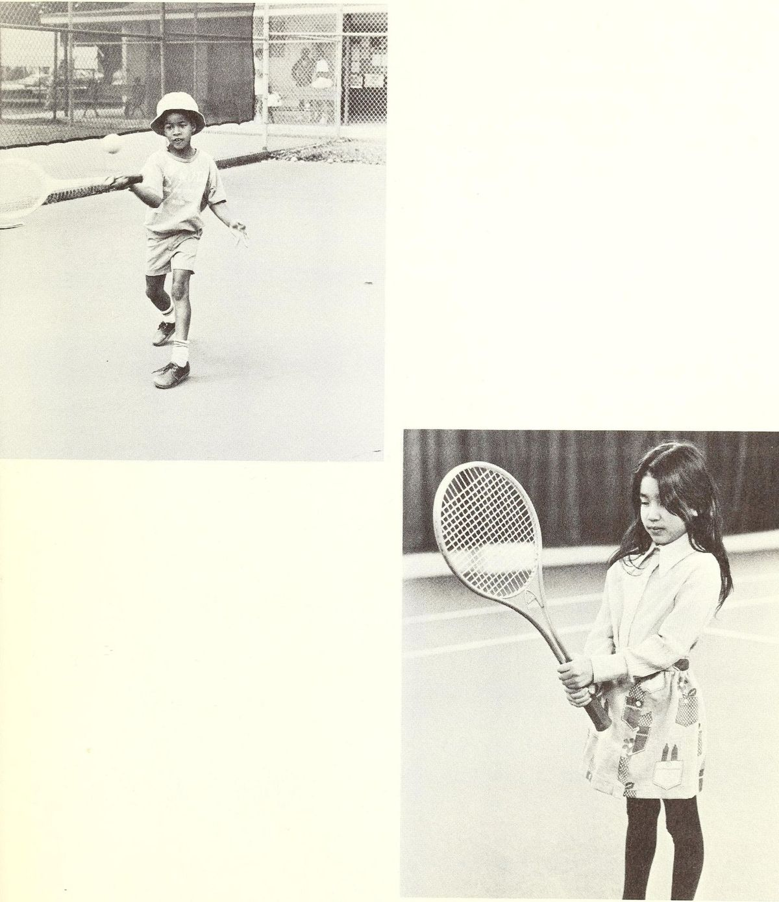
Những tay vợt nhỏ tuổi hơn nên cầm cao lên cán vợt nếu đang dùng vợt người lớn (TRÊN), và cả khi dùng vợt thiếu niên (DƯỚI). Điều quan trọng là bạn phải cảm thấy mình kiểm soát được hoàn toàn cây vợt mình chơi.
Nếu bạn đặt một quả bóng quần vợt vừa được bơm không khí lên bàn trong phòng của bạn trong hai tuần, không khí sẽ dần dần thoát ra ngoài cho đến khi áp suất không khí bên trong quả bóng bằng với áp suất bên ngoài và quả bóng sẽ không nảy cao như trước nữa. Nó sẽ hơi “chết”.
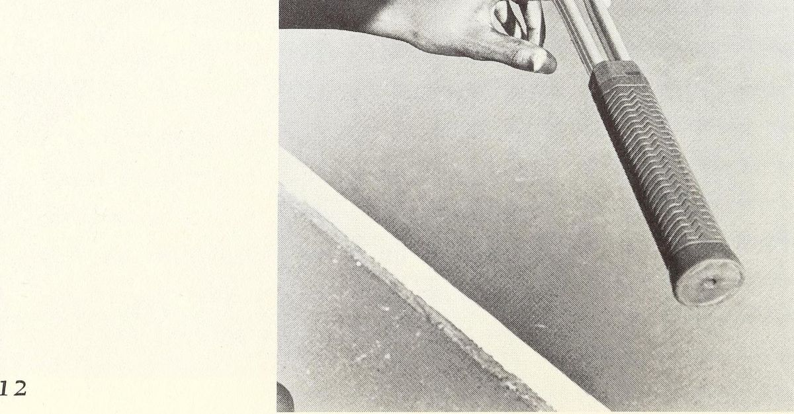
Cây vợt nên cân bằng ở khoảng giữa. Cây vợt thiếu niên này cân bằng ở điểm cách mỗi đầu 12½ inch. Nếu đầu vợt quá nặng, bạn sẽ khó vung nhanh. Nếu đầu vợt quá nhẹ, bạn sẽ có xu hướng búng vợt thay vì vung một nhịp đều và chắc tay.
Các loại bóng khác, chẳng hạn như nhãn hiệu Tretorn hoặc Pirelli thường được sử dụng ở châu Âu, có độ nảy không phải từ không khí được bơm bên trong mà từ lớp cao su tạo nên quả bóng. Bóng dày hơn và không nảy cao như bóng áp suất không khí. Những quả bóng như vậy có thể được đựng trong hộp vì không cần phải đóng gói dưới áp lực vì không có không khí được bơm vào chúng.
Tôi khuyên người mới bắt đầu nên bắt đầu với hộp bóng không có áp suất như Tretorns. Đầu tiên, bạn nhận được bốn quả bóng thay vì ba quả bóng. Ngoài ra, những quả bóng này tồn tại lâu hơn rất nhiều vì chúng dày hơn một chút. Bạn không thể đánh chúng nhanh như vậy, nhưng điều bạn cần học lúc đầu là khả năng kiểm soát chứ không phải sức mạnh và tôi nghĩ bạn có thể sẽ học điều này tốt hơn rất nhiều nếu bắt đầu với loại Tretorn.
Đối với giày quần vợt, nói chung bạn càng trả nhiều tiền cho một đôi giày thì nó sẽ càng mang lại cảm giác thoải mái và thời gian sử dụng càng lâu. Nhưng hãy nhớ rằng, ở độ tuổi của bạn, bạn có thể phải trả quá nhiều tiền cho một chiếc giày vì bạn có thể sử dụng lâu hơn trước khi mòn nó.
Tất cả các sân quần vợt ở khắp mọi nơi trên thế giới đều được xây dựng theo cùng một kích thước. Theo quan điểm của tôi, những người trẻ như bạn nên bắt đầu chơi trên một sân nhỏ hơn thế này, bởi vì bạn không thể thực hiện tất cả các cú đánh trong quần vợt theo cách mà những tay vợt lớn tuổi hơn và nhanh hơn có thể làm được. Tôi nghĩ rằng một sân có kích thước bằng khoảng 4/5 sân quần vợt tiêu chuẩn, với lưới cao 37 hoặc 38 inch gần đường biên thay vì 39 inch, sẽ giúp những đứa trẻ 12 tuổi trở xuống—và cả những người cao tuổi—học tập và tận hưởng trò chơi dễ dàng hơn.
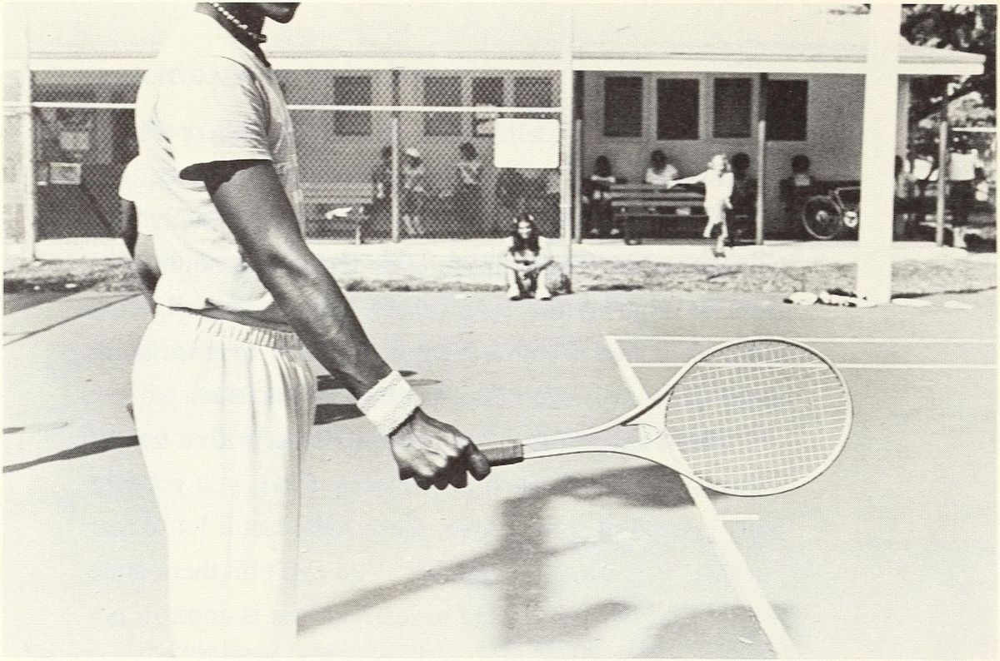
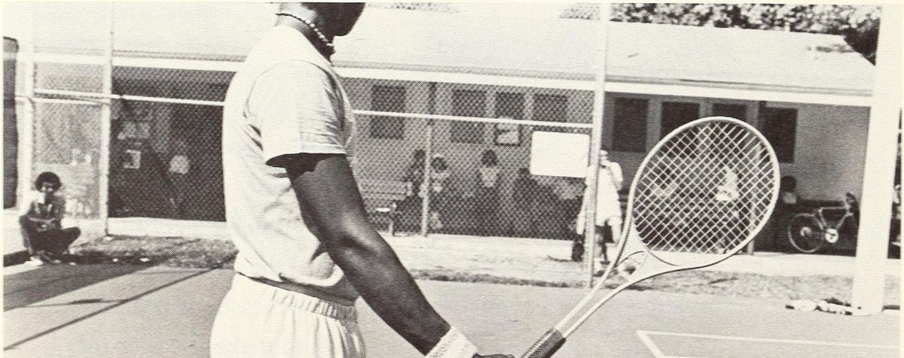
Nếu bạn với tay ra như thể để bắt tay bằng cây vợt (TRÊN), bạn sẽ tự động có được thế cầm tốt trên cán vợt: các ngón tay tách ra để kiểm soát hơn, và mặt vợt song song với mặt sân. Thế cầm kiểu búa (DƯỚI) cần tránh, vì nó làm giảm khả năng điều khiển vợt và đưa mặt vợt lên quá cao so với một cú đánh nền.
Có thể những thay đổi mà tôi ủng hộ này sẽ không xảy ra trong thời gian tới. Rất có thể hầu hết các tay vợt trẻ vẫn sẽ phải học cách chơi trò chơi trên sân có kích thước tiêu chuẩn. Tuy nhiên, hãy nhớ rằng khi bạn trưởng thành, sân sẽ không có vẻ quá lớn hoặc lưới quá cao. Điều đó sẽ giúp bạn bỏ qua cảm giác khó chịu khi đuổi theo quả bóng khi bắt đầu tiến bộ trong trò chơi và tập trung vào những phần thú vị.
Được rồi, hãy xỏ giày quần vợt vào, cầm vợt và một hộp bóng rồi cùng ra sân quần vợt.
Chương 3: Bài Học Số 1 — Cú Thuận Tay
Lesson #1: The Forehand
Chúng tôi bắt đầu bài học của mình bằng cú đánh thuận tay thay vì giao bóng, bởi vì khi bạn ra sân để khởi động, điều đầu tiên bạn làm là bật bóng lên khỏi mặt đất và đánh một cú thuận tay về phía đối thủ. Việc sử dụng tay “trước” hoặc tay thuận (tay phải nếu bạn thuận tay phải) để bắt đầu mọi việc là điều tự nhiên.
Các minh họa trong chương này cho thấy hình thức thuận tay tốt. Các động tác vung lui và các động tác kết thúc có thể hơi khác nhau đối với những tay vợt khác nhau, nhưng trong vùng tiếp xúc bóng — vùng rộng bằng một bàn chân nơi vợt gặp bóng—các cú đánh trông gần như giống hệt nhau.
Được rồi, bây giờ bạn đã xem xét các cách thực hiện cú thuận tay, hãy lấy vợt của bạn ra khỏi vỏ và giữ nó trước mặt bạn sao cho nó hướng ra ngoài từ bụng của bạn và bạn đang nhìn vào mép hoặc vành của vợt. Cách cầm vợt thuận tay được thực hiện bằng cách trải rộng các ngón tay của bạn dọc theo cán vợt sao cho chữ V được tạo bởi ngón cái và ngón trỏ của bạn nằm ở cạnh trên bên phải của cán vợt. Điều này cho phép bạn tiếp xúc với bóng với sự hỗ trợ nhiều nhất có thể từ tay bạn.
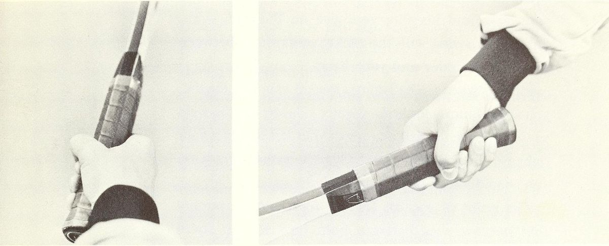
Để cầm vợt cho cú thuận tay, hãy đặt bàn tay lên cán vợt sao cho chữ V hình thành giữa ngón cái và ngón trỏ thẳng hàng với cạnh phải của mặt vợt phía trên. Chú ý rằng thế này đưa phần thịt của bàn tay ra sau lưng vợt khi bạn đánh.
Bây giờ bạn có thể đánh thuận tay bằng cách sử dụng cú giật ngược, trong đó vợt được đưa về phía sau mặt bạn theo một vòng và sau đó xuyên thẳng qua quả bóng, kết thúc bằng việc vợt đi theo đâu đó giữa vai trái và đầu của bạn. Hoặc bạn có thể đánh thuận tay bằng cách vung vợt thẳng về phía sau, với vợt được đưa thẳng về phía sau—không giật—sau đó thẳng về phía trước theo cùng một đường đi.
Tại thời điểm này, điều quan trọng cần nhớ là cách cầm vợt của bạn và để mắt đến quả bóng. Ngoài ra, hãy kết thúc cú vung vợt của bạn bằng vợt ở đâu đó giữa vai trái và đầu của bạn.
Tốt nhất, khi bóng bay qua lưới về phía bạn, bạn nên hơi xoay người sang bên phải để nhìn bóng bằng mắt trái nhiều hơn mắt phải. Khi bạn đưa cơ thể trở lại trong động tác vung lui, bạn sẽ thấy nó tự xoay một cách tự nhiên.
Điểm tiếp xúc của cú thuận tay gần như là vùng hẹp giữa hai hông khi bạn đứng nghiêng về phía quả bóng đang đến gần. Bạn muốn bắt đầu tiếp xúc về thời điểm bóng chạm đến hông phải của bạn và giữ bóng trên dây cho đến khi vợt chạm đến hông trái của bạn. Ở đây bạn có một chút thời gian cho cú đánh của riêng mình, nhưng bạn nên ghi nhớ hai điểm này.
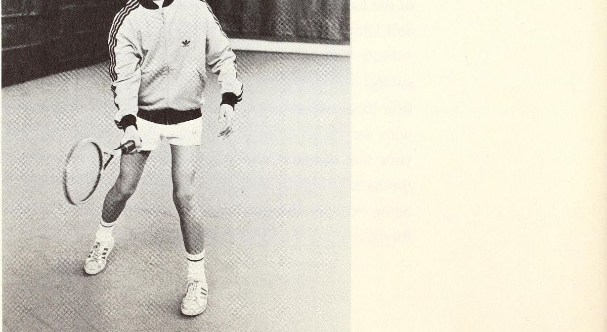
Vị trí tốt nhất để tiếp xúc bóng ở cú thuận tay là điểm đối diện với rốn của bạn.
Điều quan trọng nhất bây giờ là đánh bóng vào giữa dây. Đừng quan tâm nó đi đâu, bởi vì ngay cả khi bạn đánh bóng chắc chắn và nó bay qua hàng rào thì đây vẫn là một khởi đầu tốt. Việc bạn học cách kiểm soát đường bay của quả bóng chỉ là vấn đề thời gian và kinh nghiệm.
Cảm giác tự nhiên cần tìm khi đánh cú thuận tay là, từ lúc bắt bóng cho đến cú đánh tiếp theo, trọng lượng cơ thể của bạn sẽ chuyển về phía trước từ chân phải sang chân trái khi vợt di chuyển từ phía sau bạn qua vùng đánh tới điểm mong muốn giữa đầu và vai trái của bạn.
Hai lỗi lớn nhất khi đánh thuận tay là: (1) không lấy vợt ngược thời gian và (2) không theo kịp.
Sửa Lỗi
Nhiều người mới bắt đầu đánh bóng quá muộn. Vào thời điểm cú đánh của đối thủ nảy lên, cú đánh lùi của bạn đã hoàn tất. Bạn nên sẵn sàng bắt đầu phần phía trước của cú đánh khi bóng nảy lên. Hãy thử đếm nhịp nhàng từ một đến hai, bắt đầu ngay khi bạn đưa vợt trở lại, để thực hiện một cú vung vợt mượt mà và đúng lúc. Hãy nhớ rằng, từ “nhịp điệu” sẽ cho bạn biết đây không phải là cách đếm nhanh và giật cục. Ngoài ra, hãy đảm bảo rằng bạn đưa vợt về phía sau hoàn toàn trong một lần quét liên tục và vung vợt về phía trước theo cách tương tự.
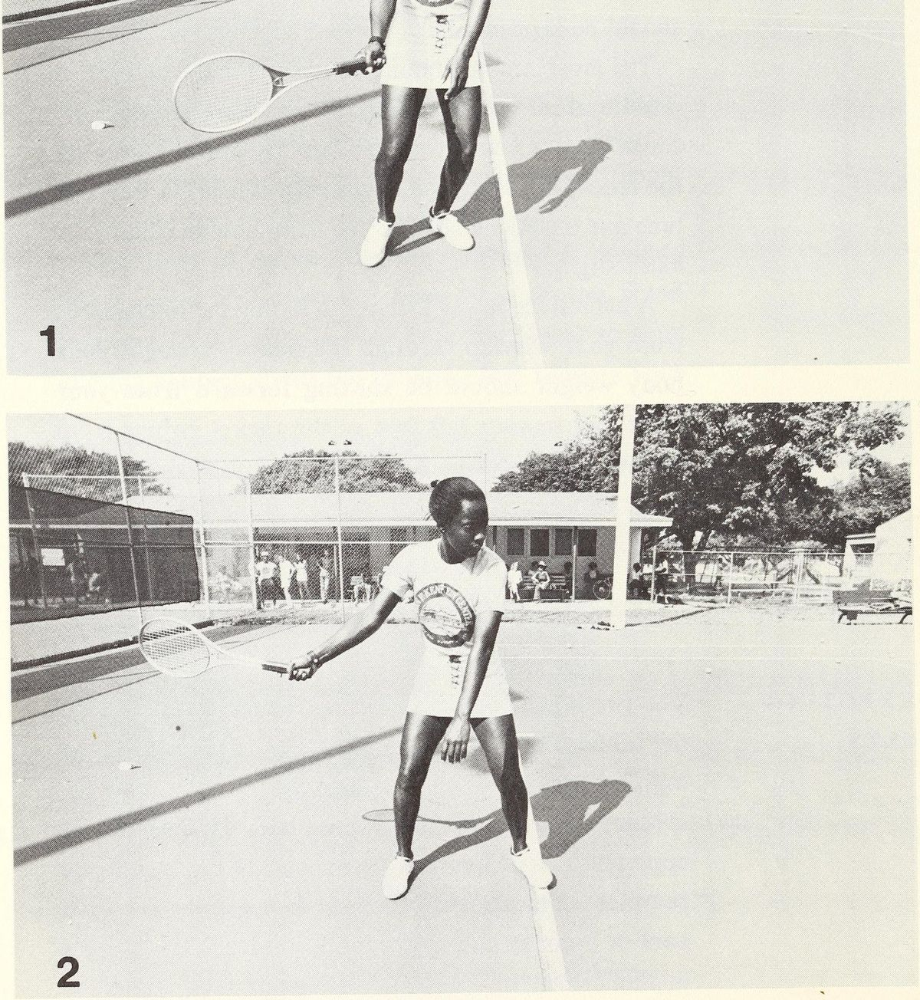
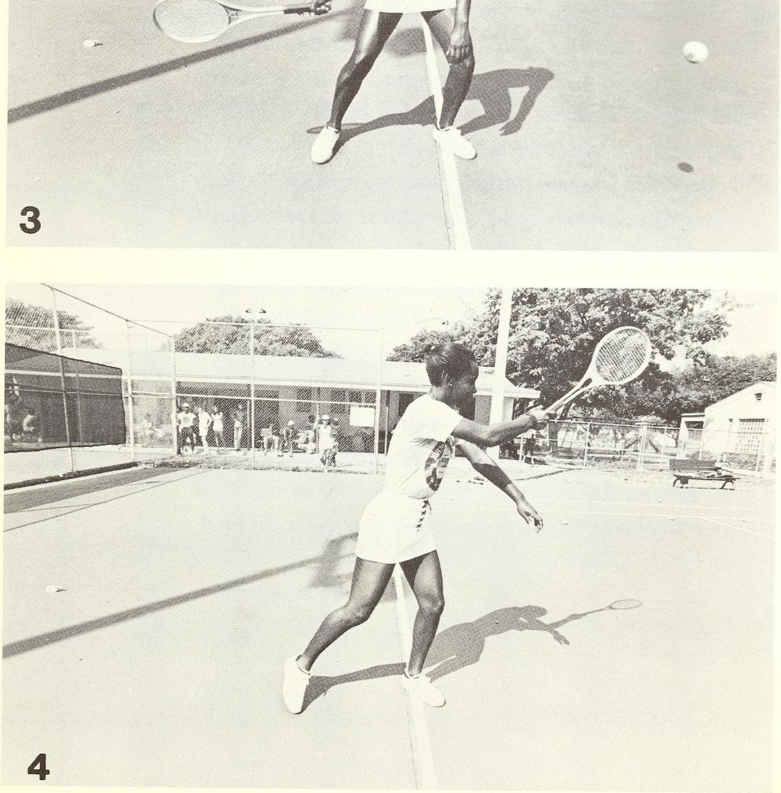
Trong loạt ảnh cú thuận tay này, tay vợt đưa vợt thẳng về sau (Hình 1 và 2) thay vì theo đường vòng lưỡi cung mà một số tay vợt ưa dùng. Hãy chú ý cô ấy chuyển trọng lượng lên chân trước êm nhường nào (Hình 3) và kết thúc với vợt giơ cao, chỉ về phía đầu hàng rào sau sân (Hình 4).
Lỗi lớn thứ hai ở những người mới bắt đầu là khi họ cảm thấy vợt chạm vào bóng, họ dừng cú đánh mà không thực hiện theo. Hãy nhớ rằng, bạn không được kết thúc cú đánh của mình cho đến khi vợt đạt đến vị trí giữa đầu và vai trái của bạn.
Một điều bạn phải nhận ra là bạn không thể lười biếng trên sân quần vợt nếu muốn chơi tốt. Sự lười biếng có thể khiến bạn đánh bóng muộn và đưa bóng vào lưới. Bóng đi vào lưới vì tay vợt thực sự không kịp để đánh ở khoảng ngang thắt lưng.
Nếu bạn đánh bóng quá lâu, có thể có một số nguyên nhân. Bạn có thể đánh bóng quá sớm hoặc bạn có thể thay đổi trọng lượng của mình trước khi thực hiện cú đánh tiếp theo. Nhưng với kinh nghiệm bạn nên khắc phục điều này. Hãy nhớ rằng, mục tiêu là đánh bóng vào giữa đường biên của sân chứ không phải để xem bạn có thể đánh mạnh đến mức nào.
Cú Trái Tay, Bắt Vô-lê & Kỹ Thuật Giao Bóng
Chương 4: Bài Học Số 2 — Cú Trái Tay
Lesson #2: The Backhand
Cú đánh trái tay được gọi như vậy đơn giản bởi vì, khi bạn vung tay về phía quả bóng từ phía bên trái của cơ thể (hoặc phía bên phải nếu bạn thuận tay trái), bạn gần như đánh nó bằng “mặt sau” của bàn tay theo đúng nghĩa đen.
Khó khăn của cú đánh trái tay là khả năng kiểm soát, bởi vì tất cả những gì bạn có sau vợt khi tiếp xúc với bóng là ngón tay cái và chưa đến một nửa bàn tay của bạn. Bàn tay được xoay khoảng một phần tư inch trên thế cầm sao cho chữ V được tạo thành bởi ngón cái và ngón trỏ nằm trên cạnh trái của thế cầm. Do đó, thời gian thực sự quan trọng hơn trong cú đánh trái tay so với cú đánh thuận tay, bởi vì sức mạnh và khả năng kiểm soát mà bạn có được ở cú đánh trái tay không đến từ cách cầm vợt mạnh mà đến từ việc căn thời gian. Vì vậy, điều cần thiết là bạn phải phát triển nhiều đà đầu vợt và tiếp xúc với quả bóng ở phía trước chân phải của bạn.
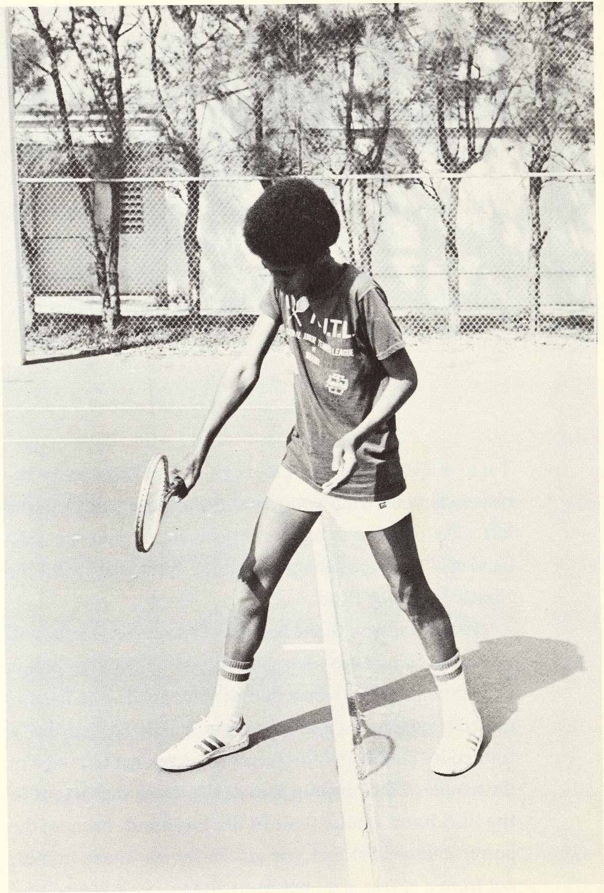
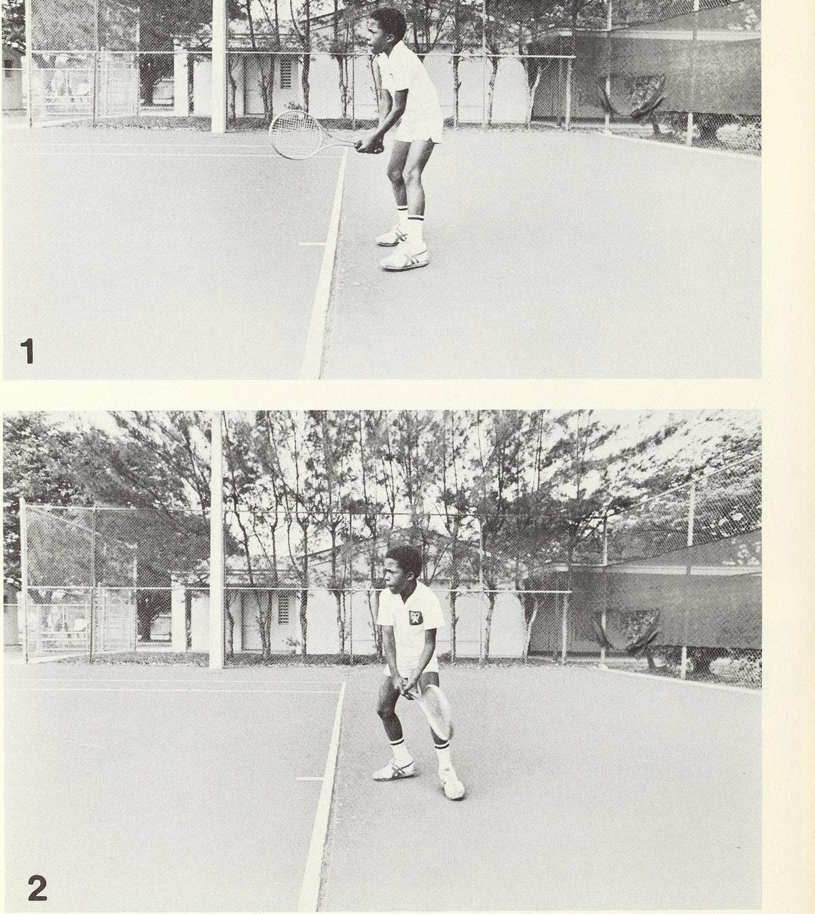
Để có lực, điều quan trọng là phải tiếp xúc bóng sớm hơn ở biên trái tay so với biên thuận tay. Luôn cố đánh bóng trước khi nó vượt qua chân trước của bạn.
Bản thân cú swing là một chuyển động hướng lên trên. Bạn muốn đưa vợt về phía sau càng thấp càng tốt—qua hông trái là vị trí thích hợp để bắt đầu—và quét cánh tay của bạn theo chuyển động hướng lên trên, kết thúc ở vị trí cao và rộng. Nhưng hãy nhớ, điểm tiếp xúc phải ở phía trước bàn chân phải. Nếu bóng vượt qua chân trước của bạn, bạn sẽ đánh bóng muộn và mất thăng bằng.
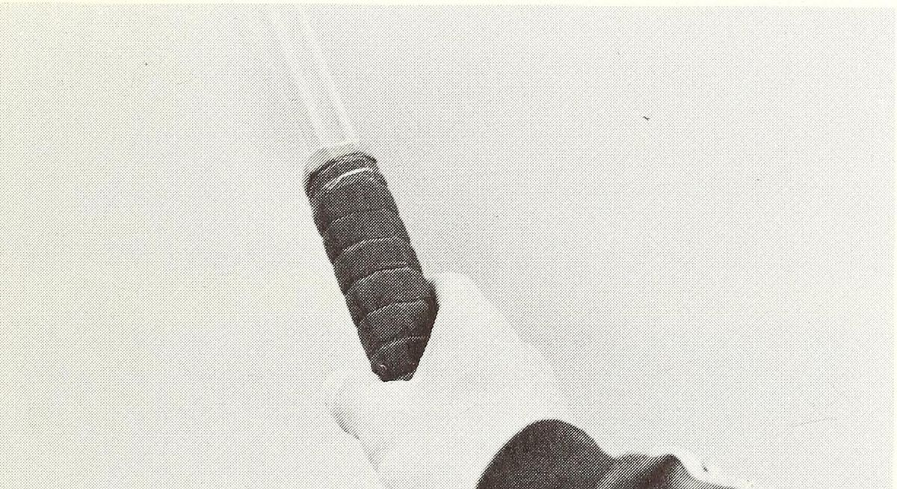
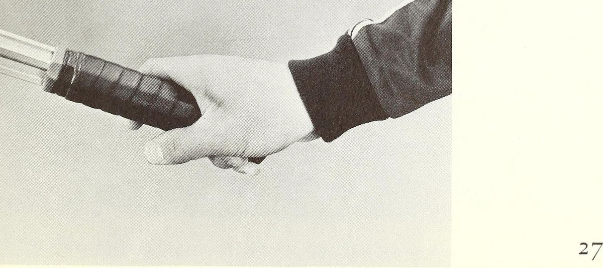
Ở thế cầm trái tay, chữ V hình thành giữa ngón cái và ngón trỏ thẳng hàng với cạnh trái của mặt vợt phía trên. Thế này đưa nhiều phần ngón cái hơn ra sau cán vợt, giúp kiểm soát tốt hơn.
Trong những hình ảnh trái tay này, tay vợt dịch người sang bên cạnh quả bóng khi anh ta cầm vợt thẳng về phía sau, sau đó di chuyển trọng lượng của mình về phía trước, vào cú đánh và bay cao. Cầm vợt bằng hai tay thay vì một tay giúp nhiều tay vợt trẻ kiểm soát cú đánh tốt hơn ở phía trái tay. Bạn nên sử dụng cách cầm vợt bằng hai tay nếu bạn gặp khó khăn khi vung vợt bằng một tay hoặc nếu cú đánh trái tay của bạn thiếu lực.
Nếu bạn chuyển trọng tâm từ bàn chân phải sang vùng rốn hoặc bàn chân trái, bạn sẽ gặp rắc rối.
Tiếp xúc với bóng với trọng lượng của bạn chuyển từ chân trái sang chân phải (ngược lại với cú thuận tay) và thực hiện theo với cánh tay quét cao và rộng. Khi về đích, khuỷu tay của cánh tay phải của bạn phải hướng thẳng vào hàng rào dọc bên phải sân.
Một lỗi mà nhiều người mới bắt đầu mắc phải khi đánh trái tay là đưa khuỷu tay của cánh tay đánh quá cao khi họ chuẩn bị đánh cú đánh. Đây là một nỗ lực nhằm bù đắp cho cổ tay yếu ớt, đặc biệt là phụ nữ và đàn em. Nó khiến bạn vung vợt vào bóng theo chuyển động tạo xoáy ngang. Hãy tập giữ khuỷu tay của bạn hướng xuống khi bạn bắt đầu tính toán thời gian đánh bóng tốt hơn. Chris Evert là một ví dụ điển hình về một tay vợt hàng đầu đánh bóng bằng khuỷu tay hướng xuống. Điều này cũng đúng với Borg, Connors, Laver—và Ashe.
Sửa Lỗi Cú Trái Tay
Giống như cú thuận tay, một lỗi quan trọng khác ở cú đánh trái tay là không đưa vợt về kịp thời để thực hiện cú đánh. Nếu không lấy vợt về kịp thời, bạn sẽ đánh quá nhanh.
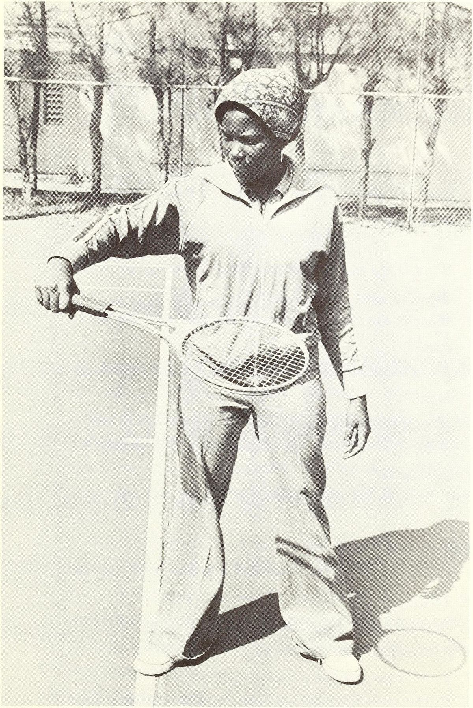
Nhiều tay vợt làm yếu cú trái tay của mình bằng cách để khuỷu tay của tay đánh sụp xuống khi vung qua bóng. Nếu bạn cố không để cổ tay đi quá xa trước mu bàn tay cầm vợt khi vung, bạn sẽ không mắc lỗi này.
Chương 5: Bài Học Số 3 — Bắt Vô-lê
Lesson #3: The Volley
BẮT VÔ-LÊ là cú đánh được thực hiện trước khi bóng chạm đất ở phần sân bên mình lưới. Thế cầm vợt đúng để bắt vô-lê không phải thế thuận tay, cũng không phải thế trái tay, mà là thế cầm kiểu lục địa (continental grip). Chữ V hình thành giữa ngón cái và ngón trỏ được đặt chính xác ở giữa mặt vợt phía trên. Với thế cầm này, bạn có thể bắt vô-lê những bóng đánh sang bên trái hoặc bên phải của mình.
Sự khác biệt lớn giữa cú vô-lê và cú đánh nền (thuận tay và trái tay) là:
- Ở tư thế sẵn sàng thực hiện cú vô-lê, thay vì đặt vợt song song với mặt đất, đầu vợt được hướng lên trên sao cho đầu vợt thẳng hàng với mắt bạn.
- Trong cú vô-lê thuận tay, bạn phải uốn cong cổ tay ra phía ngoài khi đánh, và trong cú vô-lê trái tay, bạn phải uốn cổ tay ra phía sau về phía cơ thể. Trong cú vô-lê thuận tay, việc uốn cong cổ tay tương tự như động tác bạn sử dụng để chuẩn bị đón một quả bóng ném về phía mình. Trong cú vô-lê trái tay, động tác uốn cong cổ tay giống như động tác bạn sử dụng để tát người bên cạnh bằng mu bàn tay.
Độ dài của cú đánh vô-lê khá ngắn và có rất ít hoặc không có động tác vung lui. Cú đánh được thực hiện theo đường đi xuống và ra ngoài, điều này cho phép vợt truyền độ xoáy xuống cho bóng.
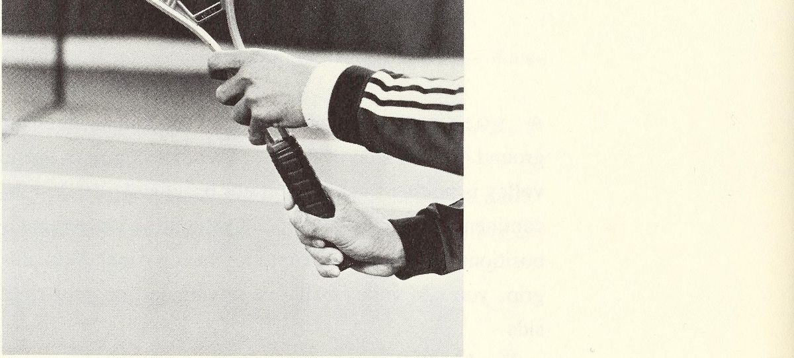
Khi bạn đã lên lưới và chờ cơ hội để bắt vô-lê, hãy nhớ giữ đầu vợt cao như trong hình, đồng thời đặt bàn tay tự do lên cổ vợt — chỗ đầu vợt nối với cán vợt — như một điểm tựa để chuyển vợt sang phía thuận tay hay trái tay khi bạn nhận ra hướng đi của bóng.
Không bao giờ để vợt ở phía sau bạn khi thực hiện cú vô-lê. Giữ nó trước mặt bạn, và bạn đánh bóng càng sớm thì càng tốt. Giữ vợt chặt hơn một chút vì bóng di chuyển trên lưới nhanh gấp đôi so với khi nó quay trở lại vạch cuối sân. Ngoài ra, hãy giữ khuỷu tay của bạn càng gần khung xương sườn càng tốt. Bạn không muốn khuỷu tay của mình bay ra ngoài trong một cú vô-lê.
Lỗi kỹ thuật chính mắc phải khi thực hiện cú vô-lê là vung vợt ngang người, thay vì chuyển động đi xuống dưới bóng và hướng ra ngoài lưới.
Sửa Lỗi Bắt Vô-lê
Lỗi vô-lê phần lớn là do tâm lý. Tay vợt có xu hướng nao núng trước lưới vì sợ hãi hoặc lo lắng. Họ chưa làm chủ tâm lý thế trận bắt vô-lê. Khi vào lưới, bạn là người chỉ huy và khi thấy bóng bay đến, bạn phải đuổi theo nó. Bạn phải tiếp cận cú vô-lê như thể bạn đang kiểm soát được tình hình.
Khi bạn nao núng, đầu vợt thường rơi xuống dưới cổ tay và cuối cùng bạn sẽ đánh bóng vào đáy lưới. Vợt phải được giữ ở vị trí cao ngang tầm mắt. Khi bóng di chuyển với tốc độ ngày càng cao, sự phối hợp giữa tay và mắt phải nhạy bén hơn. Trên thực tế, việc đặt vợt gần tầm mắt không chỉ giúp ích cho việc này mà còn hỗ trợ nhiều hơn cho cú đánh khi bóng được đánh.
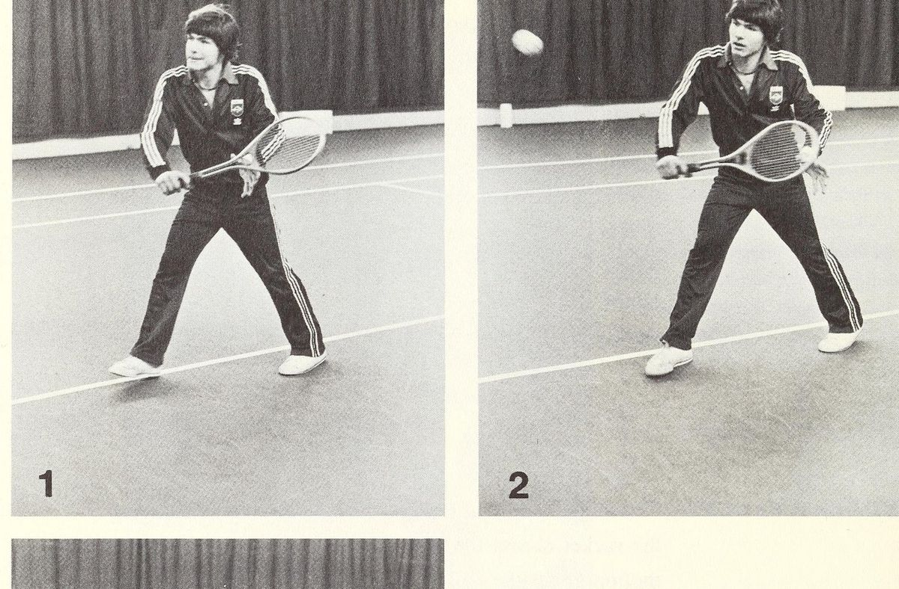
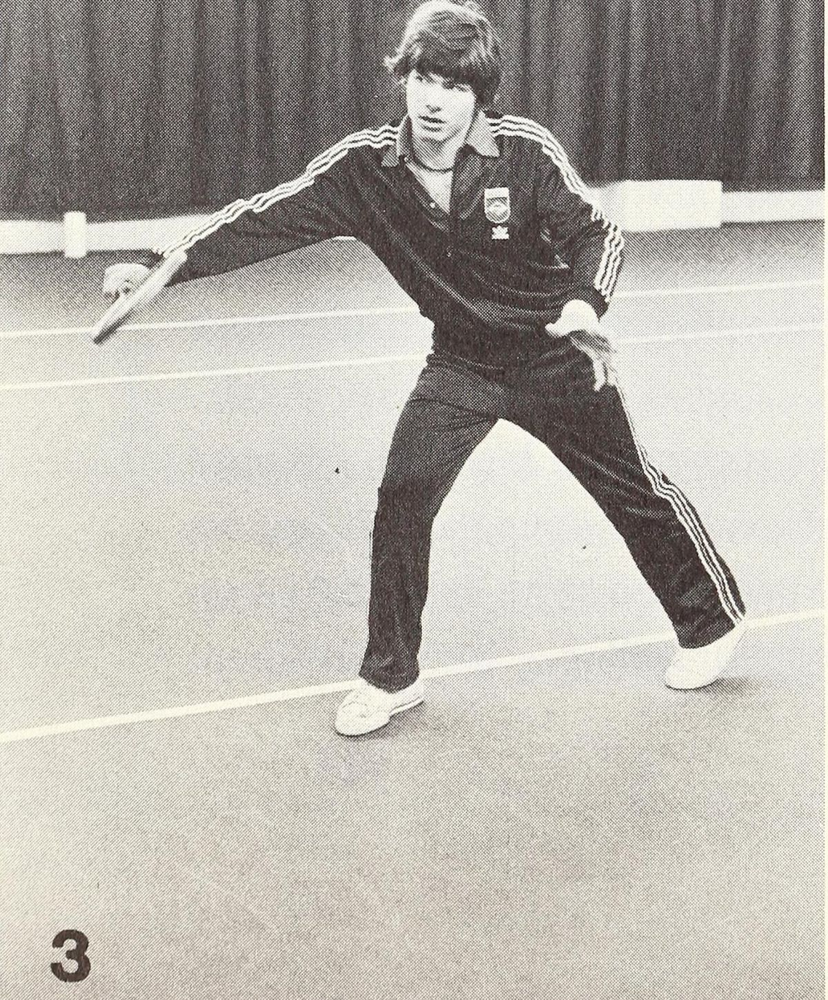
Bắt vô-lê là một cú đánh ngắn, có rất ít hoặc không có động tác vung lui. Những chuyển động đầu tiên (Hình 1 và 2) cần hướng về phía cú đánh đang tới. Bạn tiếp xúc bóng càng sớm, bạn càng đẩy được nhiều trọng lượng vào cú đánh, và bóng càng sớm trở lại bên kia lưới. Ở động tác kết thúc (Hình 3), cú đánh được thực hiện với đầu vợt lướt xuống dưới bóng. Điều này tạo xoáy cắt lên cho cú đánh, giúp kiểm soát tốt hơn. Hãy chú ý vị trí của bàn tay trái ở Hình 2. Tay ấy đang thực sự giúp đầu vợt không bị đưa lui quá xa và ra sau lưng cơ thể.
Bài Kiểm Tra Bắt Vô-lê
Ghi 12½ điểm cho mỗi câu trả lời đúng. Điểm tuyệt đối là 100.
- Cách cầm bóng đúng cho cú vô-lê là gì?
- Bạn cầm vợt ở đâu để sẵn sàng bắt vô-lê?
- Cổ tay của bạn nên làm gì trong cú vô-lê thuận tay?
- Cổ tay của bạn nên làm gì khi thực hiện cú vô-lê trái tay?
- Bạn không bao giờ được làm gì với vợt của mình trong cú vô-lê?
- Bạn nên cầm vợt chặt hơn hay lỏng hơn khi đánh bóng?
- Làm thế nào để bạn tiếp xúc với bóng trong cú đánh vô-lê?
- Bạn sẽ cảm thấy thế nào khi vào lưới để thực hiện cú vô-lê?
Đáp Án
- Sự kìm kẹp của lục địa.
- Nghiêng lên ngay trước mặt bạn, ngang tầm mắt.
- Uốn cong ra ngoài.
- Cúi người về phía sau.
- Hãy để nó ở phía sau bạn.
- Chặt chẽ hơn.
- Một cú đánh ngắn hướng xuống và hướng ra ngoài về phía lưới.
- Bạn sẽ cảm thấy rằng mình đang làm chủ tình hình.
Chương 6: Bài Học Số 4 — Cú Giao Bóng
Lesson #4: The Serve
Một phần lớn sự thành công của bạn trong môn quần vợt sẽ phụ thuộc vào mức độ bạn giao bóng tốt như thế nào, vì vậy điều quan trọng là phải xây dựng cho mình một chuyển động tung bóng và giao bóng thật sự hiệu quả.
Có hai thế cầm để giao bóng. Cách cầm vợt thuận tay giúp mặt vợt mở rộng ra phía bóng khi bạn vung vợt từ vai. Kiểu cầm vợt trái tay tiên tiến hơn giúp mặt vợt khép kín hơn với bóng và do đó tạo ra độ xoáy và khả năng kiểm soát cao hơn trong thời gian dài.
Người mới bắt đầu nên bắt đầu giao bóng bằng cách cầm vợt thuận tay. Đứng trên vạch cuối sân gần điểm giao bóng ở giữa với ý định đặt bóng vào phần giao bóng đối diện.
Để bắt đầu giao bóng, hãy đặt vợt lên vai và đặt bóng vào đầu bốn ngón tay của bàn tay trái. Ngón tay út của bạn không nên chạm vào quả bóng. (Nếu bạn dưới 12 tuổi, đừng đặt bất kỳ ngón tay nào lên quả bóng mà chỉ cần giữ nó trong lòng bàn tay đang mở của bạn.) Bây giờ, quay mặt về phía cột lưới bên phải, đưa cánh tay trái của bạn lên để tung bóng, giữ cánh tay thẳng ra— nhưng không cứng—và di chuyển nó theo một đường thẳng lên cột lưới. Đồng thời, cánh tay phải của bạn sẽ đưa vợt lên và xuống. Hai cánh tay cùng nhau bắt đầu chuyển động này.
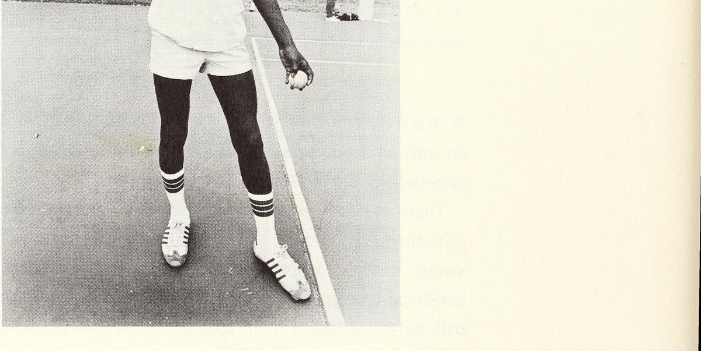
Khi mới học giao bóng, hãy đặt vợt lên vai trước khi tung bóng. Như vậy sẽ dễ phối hợp hai động tác — nâng bóng lên và vung vợt — hơn nhiều.
Động tác ném phải bắt đầu bằng trọng lượng của bạn ở chân phải và khi thả bóng, bạn nên dồn trọng lượng của mình về phía trước bằng chân trái khi bạn chuẩn bị đánh bóng.
Cú ném lý tưởng là cú tung bóng ở độ cao mà bạn có thể với tới khi cánh tay và vợt duỗi thẳng hoàn toàn.
Đây là vị trí bắt đầu thích hợp cho cú giao bóng khi bạn có khả năng phối hợp tung bóng với cú xoay người. Bóng được giữ nhẹ nhàng trong các đầu ngón tay và vợt được đặt thoải mái trên cổ tay của người tung bóng. Điều quan trọng là phải giữ tư thế thoải mái và thoải mái—thư giãn—So với cú giao bóng vì nó đòi hỏi nhiều nhịp điệu hơn bất kỳ cú đánh nào khác.
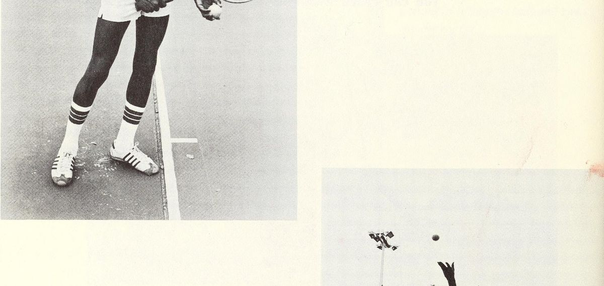
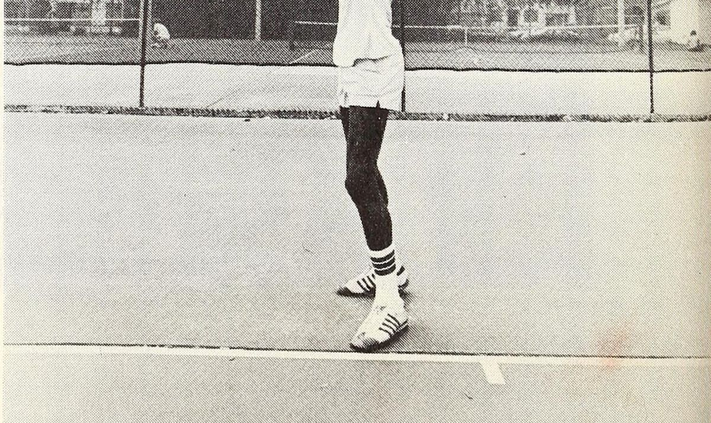
Ngay khi bóng được thả ra, vợt được đưa về sau một cách tự nhiên, giống như động tác chuẩn bị ném một quả bóng chày.
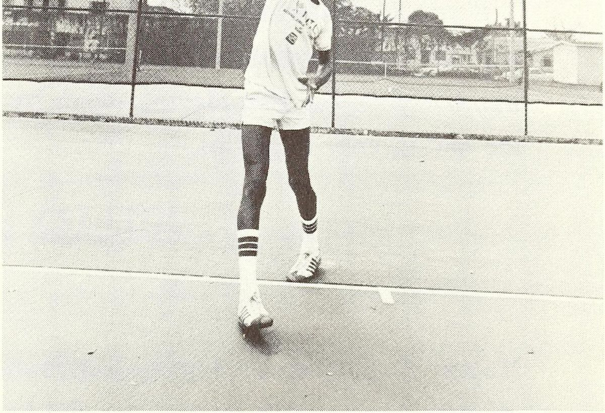
Ngay trước khi bóng bắt đầu rơi xuống, hãy với lên và về phía trước rồi đánh xuyên qua bóng. Kết thúc cú đánh với bàn chân phải ở bên trong vạch cuối sân. Bước tiến về phía trước ấy rất quan trọng — nó buộc bạn tung bóng đủ xa về phía trước.
Việc thử và sai sẽ dạy cho bạn cách đánh bóng nhanh như thế nào và cách đưa bóng qua lưới vào phần giao bóng thích hợp. Một khi bạn đạt được điều này, bạn sẽ thành thạo cách giao bóng của người mới bắt đầu.
Khi bạn trở thành một tay vợt có kinh nghiệm hơn, bạn có thể chuyển sang kiểu cầm vợt trái tay hoặc kiểu cầm vợt lục địa để giao bóng. Với mặt vợt khép kín hơn do những kiểu cầm này gây ra, độ xoáy của bóng sẽ lớn hơn.
Trong lần đầu học giao bóng, đừng đánh bóng vào góc sân hoặc gần đường biên. Đơn giản chỉ cần cố gắng đưa nó qua lưới vào đúng sân.
Ngoài ra, đừng bao giờ tung bóng lên trong khi bạn đang chuyển trọng lượng về phía sau. Chỉ ném nó khi trọng lượng của bạn nghiêng về phía trước.
Nếu bạn dưới 12 tuổi và đã tung bóng bằng lòng bàn tay mở như chúng tôi đề xuất, bạn có thể bắt đầu cải thiện khả năng tung bóng của mình sau một thời gian chơi bằng cách học cách giữ bóng trong đầu ngón tay.
Nếu bạn thấy mình đánh bóng vào lưới, rất có thể bạn đã không tung bóng đủ cao qua đầu khi giao bóng. Điều này khiến bạn phải uốn cong khuỷu tay quá nhiều và vung tay với chuyển động chật chội. Hãy tung bóng đẹp và cao, có lẽ chỉ cao hơn một chút so với mức bạn có thể với tới bằng vợt.
Sửa Lỗi Giao Bóng
Tuy nhiên, nếu bạn tung bóng quá cao, bạn sẽ phải đợi nó đi xuống, điều này sẽ làm trì hoãn và làm suy yếu cú giao bóng của bạn.
Bạn cũng có thể nhận thấy rằng, mặc dù bạn tung bóng lên và hơi vào sân theo hướng cột dọc bên phải, nhưng nó dường như đang quay ngược về phía bạn. Vấn đề có thể là bạn đang cầm quả bóng trong lòng bàn tay và khi quả bóng lăn khỏi ngón tay của bạn, ngón tay này cong vào trong, nó có xu hướng di chuyển theo hình vòng cung về phía bạn. Bóng bắt đầu đi đúng hướng nhưng lại đến sai vị trí.
Cơ thể hoạt động tốt hơn khi cả hai tay cùng hoạt động. Khi tung bóng và lên vợt để giao bóng, hãy cố gắng phối hợp các động tác này.
Bài Kiểm Tra Giao Bóng
Mỗi câu trả lời đúng được 15 điểm. Điểm tuyệt đối là 105.
- Người mới bắt đầu nên sử dụng cách cầm vợt nào để giao bóng?
- Bạn nên đặt vợt ở đâu để bắt đầu giao bóng?
- Bạn nên đối mặt với điểm nào để bắt đầu giao bóng?
- Trọng lượng của bạn sẽ thay đổi như thế nào khi bạn ném quả bóng lên không?
- Bạn nên tung bóng cao bao nhiêu?
- Nếu bạn đánh vào lưới khi giao bóng, lý do có thể là gì?
- Khi giao bóng, các cánh tay hoạt động cùng nhau hay riêng biệt?
Đáp Án
- Cách cầm vợt thuận tay.
- Trên vai phải của bạn.
- Bài viết đúng trên lưới.
- Từ chân phải sang chân trái.
- Cao bằng hoặc chỉ cao hơn một chút mà bạn có thể chạm tới bằng vợt của mình.
- Bạn tung bóng không đủ cao.
- Cùng nhau.
Bộ Chân, Luật Tính Điểm & Quy Tắc Ứng Xử
Chương 7: Bài Học Số 5 — Bộ Chân Trong Quần Vợt
Lesson #5: Footwork in Tennis
Trước khi bạn có thể đánh bóng, bạn phải đạt được nó—trong tất cả các cú đánh trong quần vợt ngoại trừ cú giao bóng. Và điều đó liên quan đến động tác bằng chân. Ngay cả khi đối thủ đánh bóng ngay vào bạn, bạn vẫn phải sử dụng động tác chân thích hợp để thực hiện cú đánh trả.
Ile Nastase và Evonne Goolagong đại diện cho sự duyên dáng và động tác chân đỉnh cao trên sân quần vợt. Chúng phối hợp một cách thể thao đến mức chúng dường như đang lơ lửng trên bề mặt.
Để có sự thuần khiết trong việc chuẩn bị động tác bằng chân, người ta phải chỉ vào Ken Rosewall. Anh ấy dường như luôn ở vị trí. Đó là bởi vì anh ấy di chuyển quá nhanh để có được quả bóng.
Goolagong, Nastase và Rosewall hiệu quả, mượt mà trông thật duyên dáng. Dòng chảy là một từ khác để chỉ sự thay đổi trọng lượng hiệu quả. Đó là điều bắt nguồn từ động tác chân tốt và nó phải được học.
Động tác chân tốt có ba tác dụng:
- Nó cho phép bạn chuyển trọng lượng của bạn từ chân sau sang chân trước, từ đó chuyển trọng lượng cơ thể của bạn sang quả bóng khi bạn vung vợt.
- Nó giúp bạn giữ thăng bằng (nếu động tác chân đúng và bạn luyện tập nó, bạn sẽ thấy mình sẽ thăng bằng hơn rất nhiều so với người không biết đúng kỹ thuật động tác chân).
- Nó giúp bạn phối hợp. Hãy xem xét ba yếu tố này chi tiết hơn.
Nếu bạn không chuyển trọng lượng của mình từ chân sau sang chân trước, bạn thực sự đang quay bánh xe của mình. Bạn không sử dụng cơ thể mình một cách tốt nhất nên nó hoạt động không hiệu quả. Khi bạn thay đổi trọng lượng của mình, bạn không cần phải vung bóng mạnh vì cơ thể bạn đang thực hiện hầu hết công việc.
Cho đến khi bạn học được cách phối hợp sự chuyển trọng lượng này từ chân sau sang chân trước khi bạn di chuyển qua vùng đánh và trước khi bóng rời khỏi dây vợt, bạn thực sự sẽ không giống một tay vợt giỏi.
Lý tưởng nhất là bạn muốn giữ bóng trên dây khi trọng lượng của bạn chuyển từ chân sau sang chân trước khi thực hiện cú đánh. Khi bóng rời khỏi dây vợt của bạn hướng sang phía bên kia của lưới, trọng lượng của bạn sẽ dồn vào chân trước. Khi bạn hoàn thành cú đánh thuận tay hoặc trái tay—với vợt cao và rộng—bạn nên xoay người xung quanh, xoay chân trái cho cú thuận tay và xoay chân phải cho cú đánh trái tay. Khi xoay người như vậy, bạn sẽ vung trọng lượng của mình xung quanh đến vị trí cân bằng, sẵn sàng cho cú đánh tiếp theo.
Bạn sẽ dễ dàng chuyển trọng tâm hơn nếu đầu gối của bạn hơi cong vì điều này khiến bạn có trọng tâm thấp.
Cách tốt nhất để đạt được sự chuyển dịch trọng lượng thích hợp là tập trung cao hơn trong thời gian bạn tiếp xúc với bóng. Nghĩa là, hãy cố gắng nhìn bóng kỹ hơn, cố gắng giữ đầu gối của bạn cong lâu hơn một chút và chống lại mong muốn nhìn lên trước khi bóng rời khỏi dây của bạn. Khi trọng lượng của bạn chuyển sang cú đánh, hãy để ý đến khu vực của dây. Bạn biết quả bóng sẽ đi đến đâu nên đừng lo lắng về điều đó; đúng lúc, bạn có thể đánh bóng vào đúng phần sân mà gần như bị bịt mắt.
Về cơ bản, khi bạn nhìn lên, bạn đang cố gắng xem liệu mình có đánh trúng hay không; nhưng bạn đang rời mắt khỏi quả bóng và đánh một cú đánh không hoàn chỉnh, một cú đánh trong đó bóng không ở trên dây đủ lâu.
Sự cân bằng thực sự là tất cả khi nói đến vẻ ngoài đẹp mắt trên sân quần vợt. Một số tay vợt, khi kết thúc cú đánh, trông như thể họ sắp ngã úp mặt, hoặc nằm ngửa.
Nếu bạn thiết lập sai khi đánh bóng, bạn sẽ mất thăng bằng khi hoàn thành cú đánh của mình và đó là bằng chứng cho thấy thiết lập của bạn đã sai.
Một vị trí sẵn sàng cân bằng là điểm khởi đầu để tiếp cận từng quả bóng một cách nhanh chóng và hiệu quả trong quần vợt.
Tại vạch cuối sân (TRÁI), chờ giao bóng hoặc vào vị trí giữa các cú đánh, đầu gối của bạn phải cong, trọng lượng tập trung vào bi của bàn chân và vợt được giữ thoải mái ở phía trước cơ thể, hướng vào lưới.
Vị trí sẵn sàng trên lưới là như nhau (DƯỚI-THẤP) ngoại trừ đầu vợt được giữ cao hơn nhiều. Điều đó giúp bạn đánh bóng dễ dàng hơn bằng cú vô-lê và cũng tăng tốc độ phản ứng của bạn vì vợt ngang tầm mắt.
Nếu bạn cho rằng mình đã làm sai điều gì đó. Thông thường, vấn đề là bạn đang đứng “quá cao”. Nếu bạn nhớ khuỵu gối và giữ trọng lượng cơ thể gần mặt đất hơn thì bạn sẽ ở tư thế ổn định hơn.
Hãy nghĩ theo cách này: Nếu bạn đứng thẳng với đầu gối khép lại mà không có chút uốn cong nào và đặt tay xuống hai bên, ai đó đẩy vào vai bạn sẽ có thể xô ngã bạn khá dễ dàng. Tuy nhiên, nếu bạn dạng chân ra một chút, uốn cong đầu gối và đưa tay ra giống như một người bảo vệ phòng thủ trong bóng rổ, bạn có thể chống lại một cú đẩy mạnh hơn vài lần so với cú đẩy đầu tiên.
Vị trí cơ thể chính xác để giữ thăng bằng (khi bạn nhanh chóng vào vị trí bằng động tác chân tốt) ở cuối cú đánh thuận tay là cánh tay phải của bạn ở giữa vai trái và đầu của bạn. Nhưng cánh tay trái của bạn nên ở đâu? Chà, cánh tay trái của bạn nên mở rộng ra một chút để giữ thăng bằng khi vai phải của bạn bị kéo xung quanh. Nếu bạn đút tay trái vào túi và thực sự vung cú thuận tay, bạn có khả năng bị ngã bằng vai phải.
Hãy thử nó. Không mạnh đến mức bạn thực sự ngã, nhưng vừa đủ để bạn có cảm giác về cái gọi là “lực ly tâm” kéo bạn không chỉ xung quanh mà còn kéo bạn xuống. Nếu bạn cố gắng đánh trái tay bằng tay trái trong túi, bạn sẽ có cảm giác rằng bạn sẽ không thể ngừng thả lỏng bản thân.
Nếu hai chân của bạn dang rộng vừa đủ khi bạn kết thúc cú đánh, nếu đầu gối của bạn cong và bạn ở tư thế thấp trong toàn bộ cú đánh, và nếu cánh tay trái của bạn duỗi ra một chút để đối trọng với hiệu ứng xoay tròn của cú đánh trái tay hoặc khuỵu xuống vai phải ở phía thuận tay, thì bạn sẽ không cảm thấy lúng túng khi kết thúc cú đánh.
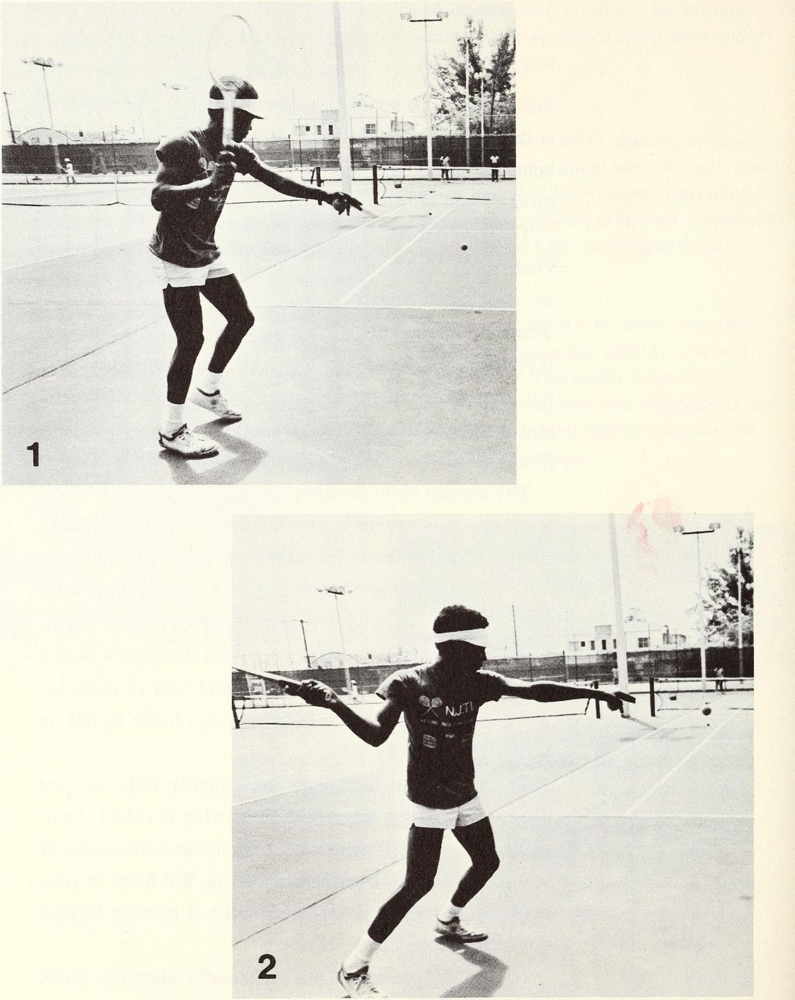
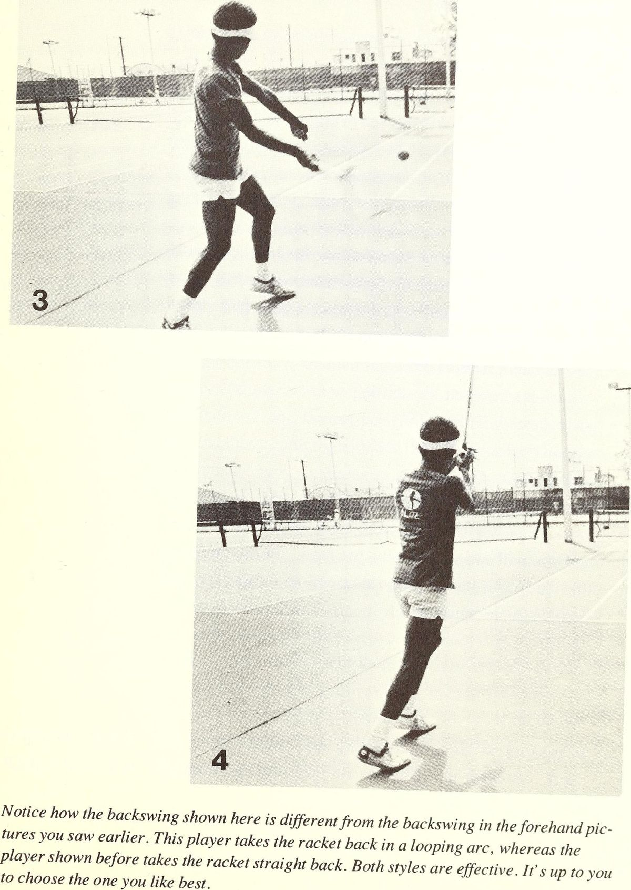
Những bức ảnh này cho thấy cách dùng trọng lượng cơ thể hiệu quả trong cú thuận tay. Ngay khi vung lui (Hình 1), trọng lượng nằm ở chân sau. Khi vợt tới gần bóng, trọng lượng chuyển sang chân trước, đảm bảo đủ lực cho cú đánh. Ở động tác kết thúc cân bằng (Hình 4), vợt đã vung qua cao và rộng, và tay vợt đã sẵn sàng di chuyển vào vị trí cho cú đánh tiếp theo.
Tôi đã lưu cuộc thảo luận về sự phối hợp ở phần cuối bởi vì nếu bạn thực hiện hai điều tôi vừa đề cập—chuyển trọng lượng và giữ thăng bằng—bạn sẽ tự động đạt được sự phối hợp. Sự thay đổi trọng lượng cộng với sự cân bằng bằng sự phối hợp.
Nhưng giả sử bạn đang chuyển trọng lượng nhưng không giữ thăng bằng. Điều này thường xảy ra nếu bạn đứng quá cao (đầu gối không gập) ở đầu, giữa hoặc cuối cú đánh. Hoặc, bạn đang giữ thăng bằng nhưng không thay đổi trọng lượng. Khi đó cánh tay của bạn sẽ phải cố gắng thực hiện công việc mà lẽ ra cơ thể bạn phải làm, và cuối cùng bạn sẽ vung vợt quá mạnh. Khi bạn vung quá mạnh, bạn không thể giữ thăng bằng và do đó bạn trở nên mất phối hợp.
Khi di chuyển để đánh một quả bóng đang bay về phía sân của bạn, bạn muốn “bỏ qua” quả bóng. Nghĩa là, từ tư thế sẵn sàng, với trọng lượng dồn về phía đầu bóng của bàn chân, bạn “nhảy” sang một bên — không bắt chéo hai chân — cho đến khi bạn chạm được bóng. Sau đó, bạn di chuyển chân trái qua bên phải để đánh cú thuận tay, hoặc chân phải qua bên trái để đánh cú đánh trái tay.
Cách Di Chuyển Trên Sân
Hãy nhớ giữ đầu gối hơi cong thay vì thẳng và cứng. Ngoài ra, bạn phải luôn cố gắng dồn trọng lượng của mình về phía trước một chút trên mu bàn chân hoặc ngón chân. Nếu bạn dồn trọng lượng lên gót chân, bạn có thể dễ dàng thấy mình đột nhiên mất thăng bằng.
Bạn sẽ phải học nhiều cách di chuyển đúng đắn trên sân thông qua việc thử và sai, bằng cách cố gắng thực hiện đúng và tìm ra những sai lầm của chính mình. Hãy nhớ rằng, việc học chơi quần vợt cần có nhiều kiên nhẫn cũng như việc học đọc hoặc giải các bài toán. Một số việc ban đầu có thể không đến dễ dàng như những việc khác, nhưng nếu bạn tiếp tục cố gắng, một ngày nào đó bạn sẽ đột nhiên cảm thấy đúng và bạn sẽ thấy được kết quả. Thực hành tạo nên sự hoàn hảo.
Chương 8: Cách Chơi Một Game… Một Set… Một Trận
How to Play a Game... Set... Match
Nếu bạn đã xem các trận đấu quần vợt trên TV hoặc tại công viên địa phương, có thể bạn đã biết rằng mục tiêu của trò chơi là đánh bóng vào phần sân đối phương theo cách mà đối phương (1) không thể với tới để trả bóng, hoặc (2) đánh bóng trở lại lưới hoặc ra ngoài đường biên. Mỗi lần điều đó xảy ra, bạn kiếm được một điểm. Tay vợt đầu tiên ghi được bốn điểm với ít nhất lợi thế hai điểm sẽ thắng một game.
Tuy nhiên, quần vợt có cách tính điểm khác hẳn, mang tính truyền thống hơn là hợp logic. Mỗi khi bạn thắng một điểm, điểm ấy lại không được ghi nhận đúng như một điểm. Điểm đầu tiên mà một bên giành được được ghi là “15”, còn tay vợt chưa có điểm nào, thay vì được tính là 0, được gọi là có “love”. Như vậy, nếu người giao bóng thắng điểm đầu tiên thì tỷ số lúc ấy gọi là “15–love”. Vì điểm của người giao bóng luôn được gọi trước, nếu đối thủ của anh ta thắng điểm đầu tiên thì tỷ số gọi là “love–15”. Điểm thứ hai mà bất kỳ bên nào giành được được ghi là “30”, nhưng điểm thứ ba, cộng với hai điểm đầu tiên, lại đưa tay vợt lên tổng “40” chứ không phải “45” như logic có lẽ đòi hỏi. Ở một trong hai điểm đầu tiên, nếu hai bên bằng nhau thì gọi là “15–15” hoặc “30–30”, nhưng nếu tỷ số bằng nhau khi cả hai đều đã có 40 điểm, tỷ số gọi là “deuce”, và tay vợt phải thắng hai điểm liên tiếp nhau để thắng game. Nếu anh ta thắng một điểm, game được coi như đang ở thế “advantage” (viết tắt là “ad”) cho anh ta, nghĩa là anh ta lúc này có cơ hội thắng cao nhất, vì nếu thắng nốt điểm tiếp theo thì game ấy thuộc về anh ta. Nhưng nếu đối thủ của anh ta thắng điểm tiếp theo, game lại trở về thế deuce.
Tay vợt giao bóng đầu tiên đứng ở bên phải đường giữa sân và phía sau vạch cuối sân, trong cái gọi là sân thuận tay, hoặc sân “deuce” (phía bên trái gọi là sân trái tay, hoặc sân “ad”). Quả giao bóng được thực hiện qua lưới vào ô giao bóng đối diện.
Dưới đây là những quy tắc chính bạn cần biết để chơi trò chơi.
Giao Bóng
- Bạn có hai cơ hội để đưa bóng vào cuộc chơi. Nếu cú thử đầu tiên của bạn chạm lưới nhưng bóng vẫn rơi đúng ô giao bóng, đó gọi là “let” (bóng chạm lưới vẫn vào) và bạn được bắt đầu lại, vẫn còn hai cơ hội. Nếu quả giao bóng thứ hai của bạn chạm lưới nhưng vẫn vào ô đúng, bạn lại có thêm một cơ hội nữa. Cứ mỗi lần cú giao bóng của bạn chạm đỉnh lưới mà vẫn vào, bạn lại được giao lại cú ấy.
- Nếu cú giao bóng của bạn chạm lưới nhưng không đi vào phần sân thích hợp hoặc nếu bóng của bạn đi qua lưới nhưng lại rơi ra ngoài phần sân thích hợp, thì đó được gọi là "lỗi" và bạn chỉ được phép thử thêm một lần nữa. Nếu bạn mắc lỗi ở lần thử thứ hai, điểm đó sẽ thuộc về đối thủ của bạn.
- Bạn không được bước vào sân trước khi thực hiện cú giao bóng của mình. Đó gọi là “lỗi chân”. Bàn chân của bạn phải ở phía sau vạch cuối sân hoặc ở trên không cho đến khi bạn đánh cú giao bóng. Bạn được phép nhảy, nhưng không được lùi lại khoảng hai feet rồi chạy lấy đà. Lỗi chân cũng bị tính như một lỗi giao bóng.
- Nếu bạn tung bóng lên để đánh mà vụt trượt, đó vẫn bị tính là lỗi vì bạn đã cố đánh bóng.
- Nếu khi đánh đôi, bạn giao bóng đánh trúng một trong hai đối thủ trước khi bóng chạm đất, bạn sẽ giành được điểm. Nếu bạn đánh bạn cặp của mình khi giao bóng đôi, thì đó là lỗi nếu bạn thực hiện điều đó trong lần giao bóng đầu tiên; đó là một “lỗi kép” (và bạn sẽ mất điểm) nếu bạn thực hiện điều đó ở lần giao bóng thứ hai.
- Bạn có thể giao bóng theo bất kỳ cách nào bạn thích (trên tay, dưới cánh tay, bên cánh tay), miễn là bạn đánh bóng trước khi nó chạm đất.
- Nếu bạn làm đứt dây vợt khi đang giao bóng lỗi, đó là điều không may đối với bạn. Trường hợp ấy không được coi là let. Tuy nhiên, nếu có điều gì đó xảy ra trên sân giữa lần giao bóng đầu tiên và lần giao bóng thứ hai mà không phải lỗi của bạn và làm gián đoạn game, bạn được phép giao lại lần đầu.
- Bạn không thể giao bóng cho đến khi đối thủ của bạn sẵn sàng trả giao bóng.
Luật Chơi
- Bạn phải đánh bóng sau một lần nảy, hoặc khi bóng vẫn đang bay từ vợt của đối thủ.
- Nếu bóng chạm vào bất kỳ bộ phận nào trên cơ thể hoặc quần áo của bạn, bạn sẽ mất điểm. Bạn chỉ có thể sử dụng vợt—bất kỳ phần nào của vợt.
- Bạn đổi bên lưới với đối thủ sau game đầu tiên của mỗi set, rồi lại đổi tiếp sau mỗi hai game. Khi không chắc chắn, hãy cộng tổng số game đã chơi trong set; nếu đó là số lẻ (một, ba, năm, bảy, v.v.), hãy đổi bên.
- Khi bạn chơi tie-breaker ở tỷ số sáu game nhau, hãy đổi bên sau mỗi sáu điểm.
- Nếu một quả bóng từ sân khác nảy hoặc lăn sang sân của bạn, bạn có thể đánh lại điểm đó. Nếu một quả bóng rơi ra khỏi túi của bạn hoặc của đối thủ, bạn chỉ có thể đánh lại điểm đó khi cả hai tay vợt đều đồng ý.
- Trong nội dung đánh đôi, sau mỗi set bạn và bạn cặp có thể thay đổi thứ tự giao bóng. Nghĩa là, người giao bóng đầu tiên trong set cuối cùng bây giờ có thể giao bóng thứ hai nếu bạn mong muốn.
- Khi thi đấu không có trọng tài, hãy công bằng, nếu không chắc bóng đã rơi ở đâu thì hãy đánh lại điểm đó.
- Trong các giải đấu, bạn không được phép nhận bất kỳ sự chỉ đạo nào cho đến khi trận đấu kết thúc.
Sau khi một trong hai tay vợt ghi được điểm đầu tiên, người giao bóng sẽ di chuyển từ bên phải sang bên trái của sân và giao bóng lại, và anh ta tiếp tục luân phiên từ bên này sang bên kia sau mỗi điểm được ghi, giao bóng cho đến hết game. Đối thủ của anh ta sau đó giao bóng game thứ hai theo cách tương tự. Các game được tiếp tục cho đến khi một tay vợt (hoặc một đội trong nội dung đánh đôi) thắng sáu game, nhờ đó trở thành người thắng set ấy. Tay vợt có thể chơi một “trận đấu”, và người thắng là tay vợt đầu tiên thắng hai set (hai trong ba), hoặc tay vợt đầu tiên thắng ba set (ba trong năm).
Tuy nhiên, khi chơi các set, nếu hai bên hòa nhau ở tỷ số 5 game, một trong hai người phải thắng hai game liên tiếp để thắng set. Nếu một tay vợt chỉ thắng được một game rồi để đối thủ thắng game tiếp theo, đưa tỷ số game về 6–6, thì họ sẽ chơi cái gọi là “tie-breaker”.
Có hai loại tie-breaker: (1) tie-breaker đột tử và (2) tie-breaker 12 điểm.
Có hai loại tie-breaker đột tử. Trong tie-breaker 13 điểm, người đầu tiên ghi được bảy điểm sẽ thắng set. Ở tỷ số 6–6, điểm tiếp theo là “điểm set”. Trong tie-breaker 9 điểm, tay vợt đầu tiên ghi được năm điểm sẽ thắng. Ở tỷ số 4–4, điểm tiếp theo là “điểm set”.
Với tie-breaker 9 điểm, hai tay vợt lần lượt giao bóng hai điểm mỗi người trong sáu điểm đầu tiên, sau đó người giao bóng tiếp theo được giao ba điểm liên tiếp.
Trong tie-breaker đột tử 13 điểm, người giao bóng đầu tiên giao một điểm, rồi hai tay vợt luân phiên nhau, mỗi người giao bóng hai điểm cho đến khi set kết thúc.
Điều này cũng đúng với thể thức tie-breaker 12 điểm. Trong tie-breaker 12 điểm, tay vợt đầu tiên ghi được bảy điểm với lợi thế hai điểm sẽ thắng set.
Tie-breaker được sử dụng bất cứ khi nào một set hòa ở tỷ số 6–6.
Để có bộ luật chính thức đầy đủ của quần vợt, hãy viết: Hiệp hội quần vợt Hoa Kỳ, 51 East 42nd Street, New York, N.Y. 10017.
Chương 9: Ứng Xử Trên Sân
Conduct on Court
Quần vợt là một trò chơi thể hiện tinh thần thể thao đích thực, và do đó có những quy tắc về phép xã giao — hoặc ứng xử — cũng phải được tuân thủ.
Các quy tắc về nghi thức trong trò chơi quần vợt thực sự nên được chia thành hai phần: (1) thái độ và hành động của bạn đối với bản thân, và (2) thái độ và hành động của bạn đối với đối thủ và công chúng.
Thái độ của bạn về bản thân phải là điều bạn cần cân nhắc đầu tiên, bởi vì cách bạn thể hiện bản thân, cách Đối thủ nhìn thấy bạn và cách công chúng nhìn thấy bạn, nếu có ai đó tình cờ theo dõi, có liên quan nhiều đến cách bạn sẽ chơi và nó sẽ giúp ích rất nhiều trong việc xác định cách mọi người nghĩ về bạn khi bạn ra ngoài chơi, cho dù đó là ở công viên công cộng hay câu lạc bộ tư nhân.
Đầu tiên, bạn phải luôn sạch sẽ. Quần áo của bạn, dù chỉ đơn giản là quần jean cắt ngắn thay vì trang phục chơi quần vợt thông thường, cũng phải gọn gàng và sạch sẽ. Điều này cũng đúng với đôi giày của bạn, ngay cả khi chúng không phải là giày quần vợt màu trắng.
Nói chung, bạn muốn có một vẻ ngoài gọn gàng vì thể thao là như vậy. Và nếu bạn hình thành những thói quen tốt này khi còn trẻ, bạn sẽ giữ được chúng khi lớn lên.
Bạn cũng muốn nghĩ về việc bạn muốn được đối xử như thế nào nếu bạn ra ngoài thi đấu với người khác trong một môn thể thao như quần vợt. Bạn sẽ không muốn đối thủ lừa dối mình, không cố gắng chống lại bạn, hoặc không thực sự chuẩn bị cho một trận đấu nghiêm túc. Khi bạn kết thúc một trận đấu, dù bạn chỉ đang tập luyện hay thi đấu, bạn đều muốn cảm thấy rằng mình đã vui vẻ, vận động nhiều, nỗ lực hết mình và muốn quay lại và thi đấu lại.
Về thái độ của bạn đối với đối thủ, trước hết, bạn phải nhận ra rằng điều quan trọng nhất đối với trò chơi quần vợt và của bạn ở giai đoạn này của cuộc đời - quan trọng hơn việc bạn có thắng hay không - là bạn phải vui vẻ. Không phải lúc nào bạn cũng thắng và không phải lúc nào bạn cũng thua; bạn sẽ làm một số trong cả hai. Nhưng nếu bạn đang luyện tập hoặc thi đấu nghiêm túc, bạn muốn biết rằng bạn đã chuẩn bị tốt và đã cố gắng hết sức, đồng thời bạn đã có được niềm vui của trò chơi. Và đây là thái độ bạn nên có đối với đối thủ của mình. Nếu anh ta bắt đầu la hét và ném vợt, hãy giữ bình tĩnh.
Một quy tắc khác là phải đúng giờ. Có lẽ bạn không thích bị bắt phải chờ đợi và bạn cũng không nên để đối thủ phải chờ đợi. Nếu bạn hẹn chơi vào lúc hai giờ, hãy đến đó lúc hai giờ kém mười. Quy tắc là: Không thể đến đúng giờ nếu bạn không có mặt trước đó. Thông thường, phải mất vài phút để chuẩn bị sẵn sàng vào sân.
Khi trận đấu bắt đầu, trong trường hợp không có trọng tài biên và các quan chức khác, hãy đảm bảo bạn gọi mọi thứ như bạn thấy. Nếu bạn không chắc chắn về cách quả bóng tiếp đất, hãy nói “Chơi một cú đánh”. Đây là một điểm khác biệt giữa quần vợt với các môn thể thao khác - một điểm đôi khi được tính lại nếu có nghi ngờ về hướng đi của nó. Trên sân đất nện, nếu một quả bóng để lại dấu vết khi chạm gần vạch cuối sân, bạn có thể biết nó vào hay ra. Nhưng trên một bề mặt cứng, nơi quả bóng không để lại dấu vết, thì bạn phải phỏng đoán một cách có căn cứ và hết sức cẩn thận với cách gọi nó.
Ngoài ra, trong suốt trận đấu, bạn phải luôn—nhưng luôn luôn—gọi tỷ số sau mỗi điểm. Bằng cách đó, sau này sẽ không có sự nhầm lẫn về điểm số là bao nhiêu.
Nếu bạn có bất kỳ nghi ngờ nào về điều gì đó liên quan đến trò chơi, hãy hỏi đối thủ của bạn; anh ấy không phải là kẻ thù của bạn, anh ấy ở ngoài đó để vui chơi giống như bạn.
Hãy luôn nhớ rằng đối thủ của bạn cũng xứng đáng nhận được nhiều sự quan tâm như bạn.
Và việc luôn bắt tay đối thủ sau trận đấu được coi là dấu hiệu của nhân cách và tinh thần thể thao tốt.
Bây giờ, cho dù bạn đang chơi trong một giải đấu trước khán giả hay trong một công viên công cộng — nơi mà tiền thuế của mọi người giúp chi trả — với những người đang xem, bạn phải lịch sự với những người đang theo dõi. Không được có những lời lẽ tục tĩu, không ném vợt, không cố ý đánh bóng vào hàng rào.
Việc khó chịu là điều tự nhiên nếu bạn bỏ lỡ một cú đánh dễ dàng. Vấn đề của việc tức giận là khi bạn nổi giận lần đầu tiên, nó sẽ ngày càng trở nên tồi tệ hơn. Lần thứ hai bạn sẽ dễ nổi giận hơn và lần này bạn thường tức giận hơn lần đầu. Nó cứ tiếp tục tăng lên và thường trong khi đó, bạn bắt đầu thế deuce. Bạn có thể nhận thấy rằng nếu bạn đánh hỏng và sau đó đánh một quả bóng vào hàng rào phía sau trong cơn tức giận, bạn thường sẽ bỏ lỡ hai cú đánh tiếp theo vì bạn vẫn lo lắng về cú đánh đầu tiên mình đã đánh hỏng. Hãy nghĩ về nó.
Điều bạn muốn công chúng biết khi rời sân quần vợt là bạn đã rất vui vẻ, chơi tốt và là một người có uy tín đối với cộng đồng và môn thể thao này.
Tóm lại, đây là một số gợi ý cuối cùng:
- Ngoại hình: Hầu hết mọi người đều mặc trang phục quần vợt, mặc dù bạn không cần phải mặc như vậy. Tại công viên công cộng, bạn có thể mặc bất cứ thứ gì - gần như vậy. Nhưng nếu muốn, bạn có thể mua một bộ quần áo quần vợt rẻ tiền ở bất kỳ cửa hàng bách hóa hoặc cửa hàng quần vợt nào.
- Khi chơi:
- Nếu một quả bóng từ sân khác lăn sang sân của bạn nhưng không làm phiền bạn, hãy kết thúc điểm của mình và sau đó trả lại bóng cho người hàng xóm. Nếu bóng lăn vào khu vực thi đấu, đừng tức giận: chỉ cần trả bóng lại và tính điểm.
- Nếu bạn đang chơi với những quả bóng mới do đối thủ hoặc bạn cặp của bạn mua, hãy đề nghị trả một nửa chi phí.
- Đừng bao giờ gọi tên đối thủ của bạn hoặc chửi rủa anh ta. Gọi anh ta là “kẻ lừa đảo” là điều tồi tệ nhất. Nếu bạn thấy anh ấy chơi không công bằng thì đừng chơi với anh ấy nữa. Hãy luôn công bằng. Gian lận không bao giờ được chấp nhận! Không bao giờ!
- Luôn rời sân khi hết thời gian. Thông thường các sân được đặt trước một giờ mỗi lần, vì vậy khi hết thời gian, hãy rời đi.
- Đừng đi phía sau sân của hàng xóm khi họ đang ghi điểm. Chờ cho đến khi hết điểm.
- Luôn rời khỏi sân như bạn muốn thấy sân của chính mình rời đi. Nhặt tất cả rác thải của bạn—lon đựng bóng cũ, chai nước ngọt, v.v.
- Nói chung, trong trận đấu, hãy giữ ý kiến của mình cho riêng mình. Đừng cười nhạo đối thủ nếu anh ta đánh trượt một cú dễ dàng hoặc khoe khoang về cú thuận tay tuyệt vời của bạn.
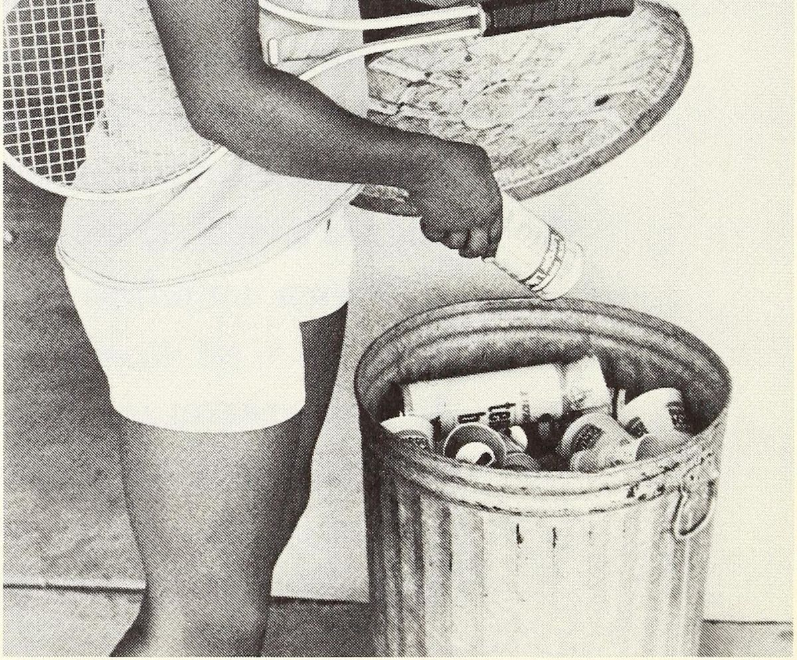
Giữ sân của bạn gọn gàng, không có rác như vỏ hộp bóng rỗng hay chai nước ngọt, là những cách đơn giản để thể hiện lịch sự trên sân quần vợt và làm cho trò chơi vui hơn cho tất cả mọi người.
Chiến Thuật Sân Đấu, Thể Lực & Con Đường Lâu Dài
Chương 10: Bài Học Số 6 — Những Cú Đánh Giúp Bạn Thắng
Lesson #6: More Strokes to Help You Win
Bây giờ bạn đã thử thuận tay, trái tay, vô-lê và giao bóng, đây là một vài cú đánh nữa để bạn học—nhưng chỉ sau khi bạn đã quen với bốn cú đánh đầu tiên.
Điều quan trọng khi đánh bóng là bạn phải chuẩn bị bằng cách đặt chân sau sao cho khi đánh bóng, bạn sẽ nghiêng người về phía trước. Bạn muốn chui xuống dưới quả bóng và đánh nó lên không trung cao nhất có thể với một cú đánh quét hướng lên trên và vợt của bạn hướng lên trời.
Cú Lốp Bóng
Một tay vợt trẻ có thể sử dụng lốp bóng khá nhiều trên sân đất nện để giữ đối thủ lùi xa nhất có thể. Rất có thể, nếu bạn đánh một cú lốp bóng sâu, trừ khi đối thủ của bạn đánh trả với cùng một kiểu đánh, bạn sẽ có cơ hội tuyệt vời để thực hiện một cú đánh thả bóng ở cú đánh tiếp theo.
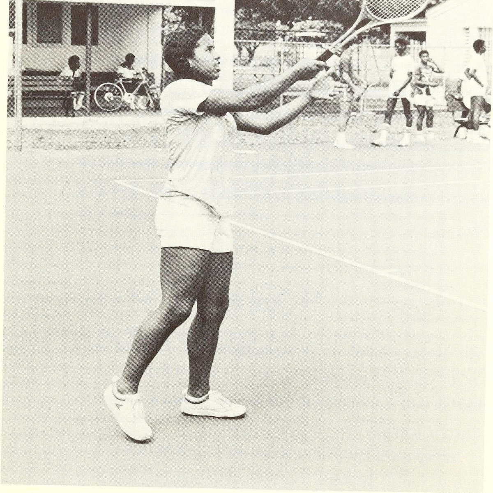
Cú lốp bóng là cú đánh dùng khi bạn bị dồn ở sau vạch cuối sân của mình và đối thủ đã dâng lên lưới. Cú đánh được thực hiện bằng cách chui xuống dưới bóng và đánh nó trên không cao hết mức có thể, với động tác quét lên, và mặt vợt hướng lên trời.
Lý tưởng nhất là cú lốp bóng của bạn nên rơi ở đâu đó giữa đường giao bóng và vạch cuối sân. Nếu nó rơi vào bất cứ đâu trong đó, bạn đang ở trong tình trạng tốt. Bạn cũng muốn đánh càng cao càng tốt vì càng đánh cao thì nó sẽ rơi xuống càng thẳng. Bạn có thể đánh nó lên theo một góc, nhưng một cú lốp bóng rất cao vẫn sẽ rơi thẳng xuống, và một quả bóng rơi thẳng xuống thì rất khó đánh trúng. Trên thực tế, nếu một quả bóng như vậy đánh vào bạn, hãy chắc chắn để nó nảy lên trước khi bạn cố gắng đánh trả lại.
Thời điểm để thực hiện một cú lốp bóng cao đẹp là khi bạn đang đuổi theo một quả bóng sâu do đối thủ đánh trúng và đối phương đang lao vào lưới.
Chiến lược đằng sau một tay vợt còn rất trẻ (mười ba tuổi trở xuống) thực hiện cú đánh thả bóng không phải để giành điểm mà là kéo đối thủ của anh ta sang một bên sân, do đó để hở cho phía bên kia.
Cú Bỏ Nhỏ
Đừng bao giờ thử thực hiện cú đánh từ vạch cuối sân, kể cả khi một ngày nào đó bạn trở thành tay vợt chuyên nghiệp. Chỉ thử một cú bỏ nhỏ nếu đối thủ của bạn đã đánh bóng trong ô giao bóng của bạn, điều đó có nghĩa là, đối với anh ta, có thể bạn đang tiến vào lưới để thực hiện một cú đánh tiếp cận (một cú đánh bạn sẽ đánh ngược xuống đường biên và sau đó đi vào lưới).
Lý do tôi nói “không bao giờ” là vì tỷ lệ sai sót quá cao. Bạn có khả năng đánh bóng vào lưới hoặc tạo điều kiện cho đối thủ đánh trả một cú đánh thắng điểm.
Yếu tố bất ngờ là hết sức quan trọng khi thực hiện cú đánh thả bóng và bạn phải có khả năng đánh được nó khi bạn kiểm soát được cú đánh.
Kỹ thuật thực hiện cú đánh xa mà một tay vợt trẻ quan tâm chỉ đơn giản là nghĩ xem bạn phải đánh bóng mạnh đến mức nào để đưa nó qua lưới. Đừng nghĩ về việc bạn sẽ làm điều đó như thế nào; cách bạn thực hiện điều đó sẽ được quyết định bởi hình ảnh trong đầu của bạn về sức mạnh mà cú đánh sẽ đòi hỏi.
Bài Kiểm Tra Cú Lốp Bóng và Cú Bỏ Nhỏ
Mỗi câu trả lời đúng được 15 điểm. Điểm tuyệt đối là 90.
- Điều quan trọng nhất khi chuẩn bị thực hiện một cú lốp bóng là gì?
- Vợt của bạn nên quay về hướng nào khi bạn đánh một cú lốp bóng?
- Bạn nên đánh một cú lốp bóng cao bao nhiêu?
- Cú lốp bóng của bạn nên tiếp đất ở đâu?
- Bạn nên thực hiện cú bỏ nhỏ như thế nào?
- Khi nào bạn không bao giờ nên thực hiện cú bỏ nhỏ?
Đáp Án
- Đặt chân về phía sau để bạn có thể nghiêng về phía trước khi đánh bóng.
- Hướng về bầu trời.
- Cao nhất có thể.
- Giữa đường dịch vụ và vạch cuối sân.
- Bằng mọi cách có thể để lấy nó qua lưới.
- Từ vạch cuối sân.
Chương 11: Bài Học Số 7 — Chiến Thuật
Lesson #7: Strategy
Khi bạn đã học cách đánh những cú đánh cơ bản trong quần vợt, bạn cần bắt đầu suy nghĩ về vị trí và thời điểm thực hiện những cú đánh đó để bạn có thể chiến thắng đối thủ—những người có thể đánh những cú đánh tương tự đó tốt như bạn có thể.
Đánh bại một đối thủ có khả năng đánh ngang bằng hoặc tốt hơn liên quan đến cái được gọi là chiến lược và đó là những gì chúng ta đang nói đến bây giờ.
Cho đến nay, phần lớn số điểm giành được là do lỗi do đối thủ mắc phải, thay vì do bạn thực hiện những cú đánh đẹp. Vì vậy, về cơ bản, bạn có thể giữ bóng trên sân càng lâu thì cơ hội giành điểm của bạn càng cao. Hãy ghi nhớ điều đó khi bạn xem xét những nguyên tắc cơ bản này để giành chiến thắng trong quần vợt.
- Khi bạn giao bóng, hãy cố gắng thực hiện được hai trong số ba quả giao bóng đầu tiên của bạn. Ở độ tuổi của bạn, đừng mong đợi giao bóng Át (một quả bóng đầu tiên chói lóa mà đối thủ của bạn không thể đánh trả). Tất cả những gì bạn muốn làm là phát triển một cú giao bóng nhất quán và nếu bạn có thể thực hiện được hai trong số ba cú giao bóng trong ô giao bóng ở giai đoạn học tập này, thì bạn sẽ thực sự chuẩn bị tốt cho bản thân khi bạn già đi và khỏe hơn.
- Nếu bạn phạm lỗi trong khi giao bóng, hãy cố gắng phạm lỗi đó bằng cách đánh bóng qua vạch giao bóng thay vì vào lưới (mặc dù kết quả của đối thủ và tỷ số là như nhau). Lý do là thế này: Học cách buông bỏ một chút trong cú giao bóng của bạn sẽ dễ dàng hơn nhiều so với việc tăng tốc độ giao bóng. Nếu bạn đánh cú giao bóng đầu tiên dài thì bạn sẽ đánh cú giao bóng thứ hai dễ dàng hơn một chút. Nếu bạn thực hiện cú giao bóng đầu tiên vào lưới, bạn vẫn chưa đến được điểm bóng, và cú giao bóng thứ hai mạnh hơn một chút có thể vẫn không đủ để đưa bóng qua lưới, trong khi mạnh hơn rất nhiều có thể là quá nhiều.
- Bạn nên nỗ lực xây dựng một dịch vụ quay vòng tốt, hiệu quả.
- Nếu bạn đang giao bóng và tỷ số là 15–15, 30–30 hoặc 15–40 (ở tỷ số cuối này, đối thủ của bạn chỉ còn một điểm nữa là thắng game), hãy giao bóng xuống giữa. Cách đó an toàn hơn. Đừng mở rộng sân bằng cách cố giao bóng rộng về phía thuận tay của đối thủ.
- Nếu bạn đang giao bóng và tỷ số là 15 tình yêu, 30-15 hoặc 40 tình yêu (bạn dẫn trước tất cả những điều này), bạn có thể thử giao bóng thật rộng.
- Khi bạn bắt đầu một pha giao bóng, hãy đưa bóng trở lại sân bốn lần trước khi bạn nghĩ đến việc giành điểm. Nếu bạn làm được điều đó ở độ tuổi của mình trước những đối thủ cùng tuổi, tôi tin chắc rằng bạn sẽ thắng hầu hết mọi trận đấu mà bạn thi đấu. Nghe có vẻ đơn giản nhưng hãy nhớ điều này: Hầu hết mọi người, đặc biệt là những người mới tập chơi và mới bắt đầu, có xu hướng mắc lỗi trong ba cú đánh đầu tiên.
- Thậm chí đừng nghĩ đến việc thực hiện một cú đánh tiếp cận lưới trừ khi bóng nảy trong ô giao bóng. Nếu bóng nảy giữa đường giao bóng và vạch cuối sân, hãy ở sân sau. Nếu bạn định thực hiện một cú đánh tiếp cận và đi vào lưới, trừ khi đối thủ của bạn ở ngoài sân, hãy đánh bóng dọc theo vạch. Sau đó tiến vào và mong đợi cú đánh của đối thủ sẽ quay trở lại đường thẳng tương tự. Nghĩa là, vào và đứng sang trái một chút ở giữa nếu bạn đánh trái tay dọc theo đường biên, và nếu bạn đánh thuận tay, hãy vào và đứng sang phải một chút ở giữa. Điều này có nghĩa là bạn thực sự thừa nhận phần sân mà bạn đã bỏ ngỏ. Nếu đối thủ của bạn thực sự có thể đưa bóng qua bạn ở phần sân đó thì anh ta đã thực sự tung ra một cú đánh đẹp. Nhưng bạn có phần trăm phần sân (phần mà bóng có nhiều khả năng bay đến nhất) được che phủ như một tấm chăn.
- Bạn không bao giờ nên cân nhắc việc thực hiện một cú đánh tiếp cận chéo sân trừ khi đối thủ của bạn vừa rời khỏi sân và bạn đã mở rộng phần đó. Sẽ rất nguy hiểm nếu thực hiện một cú đánh tiếp cận qua sân.
- Khi không biết phải làm gì ở phần sân sau, hãy đánh một quả bóng sâu và đẹp vào giữa sân. Bạn không thể làm tổn thương chính mình với điều đó.
- Ở tuổi của bạn, đừng nghĩ đến việc cố gắng giành điểm khi trả giao bóng cho đối thủ. Hãy nhớ quy tắc đưa bóng vào phần sân đối phương một cách an toàn bốn lần trước khi cố gắng giành điểm. Việc giành được nó khi trả giao bóng sẽ diễn ra sau ba hoặc bốn năm, khi bạn khỏe hơn.
- Nếu đối thủ của bạn là người hay dâng lưới, hãy đảm bảo rằng nếu anh ta thắng điểm thì bạn sẽ không bị mất điểm. Nghĩa là, đừng thử một cú đánh xuyên lưới ngoạn mục mà bạn có thể đánh hỏng. Hãy để đối thủ của bạn tự ý lên lưới và bắt vô-lê. Anh ta có thể đánh được một cú mà bạn sẽ đánh hỏng, nhưng anh ta cũng có thể tự đánh hỏng khi cố thực hiện.
- Nếu bạn thấy mình đang theo sau đối thủ khá nhiều trong một trận đấu, chắc chắn đó là do bạn đã mắc quá nhiều lỗi.
Vì vậy, nếu bạn đã tuân thủ quy tắc đưa bóng vào sân bốn lần trước khi cố gắng giành được một điểm, hãy tăng con số đó lên năm, từ đó tăng khả năng đối thủ mắc lỗi. Học cách chơi quần vợt không mắc lỗi nhiều hơn, bởi vì ở mọi cấp độ kỹ năng trong quần vợt, các trận đấu hiếm khi thực sự thắng; thay vào đó, họ bị thua—thua bởi tay vợt mắc nhiều lỗi nhất.
Chương 12: Bài Tập Thể Lực
Exercises
Các tay vợt quần vợt chuyên nghiệp — và những tay vợt trẻ nên làm theo ví dụ này — thấy rằng khởi động trước khi bước vào sân quần vợt là điều tốt nhất. Nếu chỉ có một sân, chúng tôi thường chạy quanh sân ấy bốn lần. Nếu có hai sân cạnh nhau, chúng tôi chạy quanh cả hai sân ấy bốn lần. Nếu có nhiều sân hơn, chúng tôi chạy quanh tất cả các sân ấy bốn lần.
Quần vợt là một hoạt động rất vất vả, và nếu bạn chỉ bước vào sân và bắt đầu chạy theo những quả bóng quần vợt, điều đó giống như việc thức dậy vào buổi sáng và chạy một quãng đường 440 yard. Trước tiên bạn phải làm nóng cơ thể trong năm phút.
Hầu hết tay vợt phải chơi ở hầu hết các sân trong một giờ mỗi lần, vì vậy cơ thể của bạn nên được làm nóng thông qua các bài tập trước khi ra sân thi đấu. Bằng cách này, bạn sẽ không phải tốn nhiều phút quý giá chỉ để khởi động cơ thể. Nhưng quan trọng nhất, bằng cách tập thể dục trước khi bước vào sân, bạn sẽ ít có khả năng bị chuột rút, bong gân mắt cá chân hoặc đau nhức ở vai hoặc khuỷu tay.
Ngoài việc chạy quanh sân trước trận đấu, hãy thử loạt bài tập này:
- Đứng chống tay lên hông và chỉ lăn đầu về một hướng trong khoảng 15 giây. Sau đó cuộn nó theo cách khác trong 15 giây.
- Chống hai tay sang hai bên, cuộn vai về phía trước và xuống rồi lại lùi lại trong 15 giây. Sau đó cuộn chúng về phía sau, rồi lên trên, quay lại và xoay tròn trong 15 giây.
- Đứng hai chân rộng bằng vai và vung tay theo hướng bạn cuộn vai. Thực hiện động tác này trong 15 giây theo mỗi hướng.
- Bây giờ, vung cánh tay của bạn qua lại theo chiều ngang. Xoay chúng xung quanh càng xa càng tốt! Làm điều này trong 20 giây.
- Kéo giãn các cơ lưng dùng để giao bóng bằng cách đứng hai chân rộng bằng vai, đưa cả hai tay lên không trung và dùng tay phải nắm lấy cổ tay trái và từ từ kéo cánh tay trái qua đầu. Bạn sẽ cảm thấy bên trái của mình căng ra. Kéo xa nhất có thể và giữ nó trong 5 giây. Sau đó đưa cả hai cánh tay về vị trí mở rộng trên không. Lặp lại điều này một lần nữa, nhưng lần này bạn có thể kéo cánh tay trái thêm một chút. Giữ nó ở vị trí đó trong 5 giây và sau đó trở về vị trí thẳng đứng. Bây giờ chuyển đổi, nắm lấy cổ tay phải bằng tay trái và lặp lại bài tập.
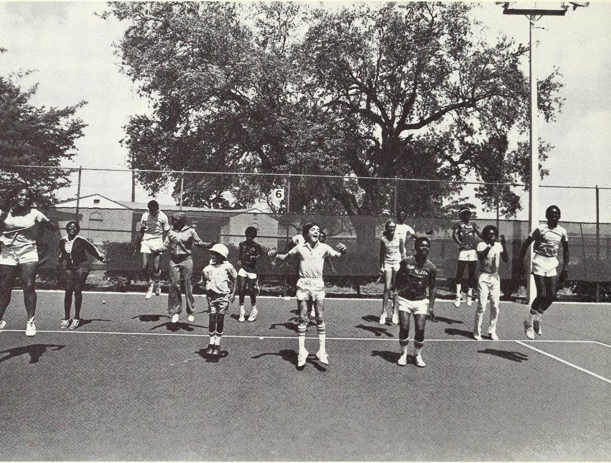
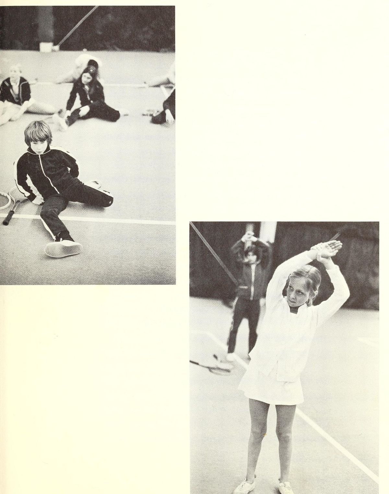
Quần vợt là hoạt động nặng đến mức mọi tay vợt, trẻ hay già, đều nên khởi động ít nhất năm phút trước một trận đấu. Các bài tập làm cơ bắp mềm ra — và chúng rất vui khi làm.
- Bây giờ là phần chân. Đầu tiên, đứng chụm hai chân lại và vươn xuống xa nhất có thể bằng cả hai tay và giữ ở đó trong 5 giây. Hãy đứng dậy và lắc chân. Lặp lại, nhưng lần này dùng tay đi xuống sâu hơn; giữ trong 5 giây. Hãy đứng dậy một lần nữa và thả lỏng đôi chân của bạn.
- Ngồi trên sàn và duỗi chân trái, nhưng uốn cong chân phải sao cho gót chân phải sát với đùi phải. Sau đó dùng cả hai tay cố gắng từ từ, rất chậm để chạm tới ngón chân trái. Thực hiện động tác này hai hoặc ba lần rồi đổi chân.
- Đối với bài tập cuối cùng, hãy nhảy lên cao nhất có thể 10 lần. Bây giờ cơ thể bạn ấm áp. Hãy ra ngoài và chơi quần vợt nào!
Chương 13: Mặt Sân — Lớp Vỏ Bên Trên Rất Quan Trọng
Court Surfaces—What's on Top Counts
Sau khi đã học cách chơi quần vợt, bạn nên quan sát kỹ hơn mặt sân mà mình đang chơi.
Có nhiều bề mặt khác nhau cho sân ngoài trời và những bề mặt khác nhau cho sân trong nhà. Nhưng thực sự chỉ có hai đặc điểm bề mặt khác nhau: sân đất nện và sau đó là tất cả các sân cứng.
Quả bóng nảy nhanh hơn rất nhiều trên sân cứng và độ cao của cú nảy phụ thuộc gần như vào những gì có trong lớp đất phụ. Ví dụ, Dynaturf là bề mặt cứng thường được sử dụng trong nhà. Nó có một lớp nút chai mỏng khiến bạn có cảm giác giống như đang đi trên khoai tây nghiền và khiến quả bóng nảy lên cao hơn Laykold, một bề mặt cứng khác. Đó là bởi vì bề mặt Dynaturf với lớp nút chai tạo ra một chút và đánh bóng ra ngoài một chút.
Sân đất nện “cho” vì đất sét được làm từ đất, và đất có thể nén chặt. Tức là nó nén lại một chút và đánh bóng trở lại. Sự khác biệt lớn khi chơi trên sân đất nện là bạn phải học cách trượt, điều mà bạn không thể làm được trên bề mặt cứng hoặc tổng hợp. Hầu hết thời gian, trên sân đất nện, bạn sẽ đánh bóng ở ngang thắt lưng hoặc cao hơn, và bạn phải học cách trượt vào các cú đánh của mình để khi đến cuối đường trượt, bạn đang thực hiện phần phía trước của cú xoay người. Sau đó, bạn lấy lại thăng bằng và di chuyển trở lại phần sân mong muốn. Do trượt trên sân đất nện nên độ chính xác trở nên quan trọng hơn tốc độ, vì vậy bạn có thể muốn buộc vợt lỏng hơn một chút để khi tiếp xúc với bóng, bóng sẽ nằm trên dây vợt lâu hơn một chút.
Nếu bạn chơi trên bề mặt cứng hoặc nhựa đường, bạn nên thử chơi với dây chặt hơn vì trong trường hợp này tốc độ quan trọng hơn khả năng kiểm soát. Trên những bề mặt này, bóng đến với bạn nhanh hơn rất nhiều.
Đất sét ngày nay hiếm khi được sử dụng làm bề mặt sân trong nhà vì rất khó bảo trì bên trong. Do đó, nếu bạn chơi trong nhà, bạn có nhiều khả năng chơi trên Dynaturf, Laykold hoặc Sportface (khá giống một tấm thảm).
Ngoài trời, bạn có thể sẽ chơi trên Laykold hoặc sân đất nện. Có ba thuật ngữ phổ biến khác dành cho đất sét: (1) thành phần, (2) Har-tru, và (3) En-tout-cas, một thuật ngữ tiếng Pháp, tạm dịch là “trong mọi trường hợp”, nghĩa đen là sân có thể hoạt động trong mọi thời tiết. Nhưng sân đất nện vẫn là sân đất nện.
Chương 14: Luyện Tập Vui Vẻ Và Hiệu Quả
Practice for Fun and Improvement
Mặc dù chơi quần vợt rất thú vị nhưng để thực sự cải thiện kỹ năng chơi của mình, bạn phải luyện tập và điều đó cũng sẽ rất thú vị. Nhiều người không thích tu tập vì họ coi đó là công việc hoặc chỉ là sự cực nhọc. Nhưng có những trò chơi bạn có thể chơi trong khi luyện tập. Và hãy nhớ rằng, trong khi bạn luyện tập, bạn đang tiến bộ.
Điều quan trọng không phải là số giờ bạn luyện tập mỗi ngày. Đó là những gì bạn làm khi bạn ở ngoài đó. Việc luyện tập, ngoại trừ khi bạn đang thi đấu tập, phải cụ thể.
Thông thường, nếu bạn định dành một ngày để luyện tập thì nên chia làm hai phần. Buổi tập buổi sáng chỉ nên giới hạn ở việc cố gắng cải thiện một số cú đánh mà bạn cho rằng mình còn yếu. Bạn có thể đánh những cú vô-lê thuận tay, sau đó bạn có thể đánh những cú vô-lê trái tay trong 20 phút mỗi lần. Sau đó, bạn có thể giao hai giỏ bóng (khoảng 50 lần giao bóng). Bạn cũng có thể muốn rèn luyện sự nhanh chóng của mình. Nếu một người bạn muốn đánh bóng cho bạn, bạn có thể chỉ cần thực hành việc chuẩn bị cho việc trả giao bóng. Bạn có thể muốn kết thúc buổi tập bằng một động tác nhảy dây, gập bụng hoặc một số bài tập khác.
Sau đó để nguội một lúc.
Buổi chiều, bạn có thể quay lại chơi các trận đấu hoặc một số trò chơi mang tính cạnh tranh khác. Bạn có thể chơi một set thông thường với cách tính điểm thông thường, hoặc bạn có thể chơi một game 11 điểm, trong đó cùng một người giao bóng cho đến khi anh ta tự giành được 11 điểm trong lượt giao bóng của chính mình. Trong game này, đối thủ của bạn ghi được bao nhiêu điểm không quan trọng. Bạn cứ giao bóng cho đến khi tổng điểm của mình đạt 11. Sau đó đến lượt đối thủ giao bóng cho đến khi anh ta giành được 11 điểm. Rồi bạn có thể so sánh điểm số xem ai phải tốn nhiều cú giao bóng nhất để giành 11 điểm. Việc này thực sự có thể mất nhiều thời gian, nhưng bạn sẽ được luyện tập rất nhiều khi giao bóng trước đối thủ.
Bạn có thể chơi các trận đấu 21+ hoặc 31 điểm, với mỗi tay vợt giao bóng năm lần liên tiếp. Và bạn có thể chơi trò chơi tương tự theo cách khác: Nếu bạn muốn cải thiện sự tập trung của mình khi trả giao bóng, bạn có thể chơi rằng ai giành được nhiều điểm nhất trong khi trả giao bóng sẽ thắng trận đấu. (Jimmy Connors hoặc Ken Rosewall sẽ rất giỏi trong việc này vì họ có những cú trả giao bóng tuyệt vời.) Điều này buộc bạn phải thực sự tập trung để không bỏ lỡ cú trả giao bóng đó, điều này thường xảy ra do việc cố gắng giành chiến thắng trong quả trả giao. Thông thường tổng điểm thắng game ở bài tập này được ấn định không cao hơn 11 điểm.
Bạn chắc chắn không nên tập luyện hàng ngày. Thỉnh thoảng bạn nên nghỉ hai hoặc ba ngày. Điều này không có nghĩa là bạn đặc biệt cần nghỉ ngơi về thể chất. Đi bơi hoặc chơi bóng chày hoặc chơi gôn. Đừng chơi quần vợt. Hãy tránh xa nó một thời gian. Tuy nhiên, trong giai đoạn này, bạn có thể nghĩ về trò chơi, xem xét các nguyên tắc cơ bản trong đầu, phát hiện ra điểm yếu của mình và nguyên nhân của chúng, đồng thời quyết định nên luyện tập gì tiếp theo.
Các tín hiệu nguy hiểm, đặc biệt là khi thời tiết nóng, bao gồm chóng mặt và buồn nôn. Nếu bạn cảm thấy chóng mặt hoặc đau bụng, hãy dừng lại ngay lập tức. Cơ thể bạn đang nói với bạn điều gì đó: Ở giai đoạn này, bạn không được trang bị thể chất để chuẩn bị tiếp tục.
Xem các giải đấu quần vợt trên truyền hình có thể mang lại nhiều thông tin bổ ích, nhưng tôi không nghĩ bạn nên xem các trận đấu nhiều mà để ý xem một số tay vợt nhất định làm gì trong những tình huống cụ thể và ở những giai đoạn nhất định của trận đấu. Hãy chú ý đến những điều như khi tay vợt thực hiện một cú đánh tiếp cận, họ đánh một cú đánh trái tay hay một cú đánh xoáy xuống, kiểu giao bóng nào họ đánh khi ở điểm tình yêu-30, vị trí họ giao bóng và khi một tay vợt chọn lốp bóng.
Bạn cũng có thể học được nhiều điều về những điều không nên làm. Bạn có thể thấy một tay vợt bị bỏng khi cố gắng thực hiện cú đánh tiếp cận chéo sân và mất điểm.
Một số tay vợt có thể bị theo dõi một số cú đánh nhất định, nhưng sẽ có nguy hiểm khi cố gắng sao chép những gì ai đó làm chỉ vì anh ta là một tay vợt giỏi. Như tôi đã nói trước đó, có rất nhiều phong cách chiến thắng khác nhau trong quần vợt. Phong cách của bạn có thể không giống với phong cách bạn thấy trên TV và do đó bạn sẽ không được hưởng lợi từ việc bắt chước phong cách đó.
Một cách tuyệt vời để học trong khi xem quần vợt trên truyền hình là áp dụng phương pháp thống kê: Lập biểu đồ trận đấu. Lấy một tờ giấy và tạo năm cột với các tiêu đề: giao bóng, thuận tay, trái tay, vô-lê và đánh đầu. Làm điều này cho cả hai tay vợt. Bây giờ tất cả những gì bạn phải làm là theo dõi các lỗi xảy ra với những nét vẽ này. Một mô hình sẽ phát triển nhanh chóng. Điểm yếu của tay vợt sẽ trở nên rõ ràng. Một khi họ làm vậy, hãy quan sát xem anh ta hoặc cô ta cố gắng bù đắp cho họ như thế nào và đối thủ của anh ta hoặc cô ta cố gắng khai thác chúng như thế nào.
Tạo thêm hai cột cho mỗi tay vợt ở cuối trang. Trong một lần, đánh dấu số điểm giành được nhờ một cú đánh không thể đánh trả. Mặt khác ghi số điểm giành được do lỗi của đối thủ. Vào cuối trận đấu, hãy so sánh hai cột và bạn sẽ phát hiện ra rằng trong hầu hết các trận đấu, 90% số điểm bị mất thay vì giành được. Kết luận là hiển nhiên. Để trở thành người chiến thắng, bạn phải giảm thiểu số lỗi.
Xem một trận đấu trên truyền hình có thể không cải thiện được trận đấu của bạn nhiều như việc luyện tập nhưng nó có thể chỉ ra những khía cạnh của trận đấu mà bạn cần phải cải thiện. Vì vậy, lần tới khi bạn đang ở nhà xem một trận đấu và có ai đó gọi điện hỏi bạn đang làm gì, đừng nói rằng bạn đang xem TV mà hãy nói rằng bạn đang học bài.
Chương 15: Ăn Uống Đúng Cách Rất Quan Trọng
Eating Right Is Important
Những gì bạn ăn và thời điểm ăn rất quan trọng nếu bạn muốn chơi quần vợt giỏi.
Dạ dày của bạn sẽ trống rỗng sau khoảng một tiếng rưỡi. Vì vậy, bạn nên cố gắng ăn từ hai đến hai tiếng rưỡi trước khi thi đấu.
Những gì bạn muốn ăn trước trận đấu là những thực phẩm được gọi là carbohydrate. Chúng bao gồm gạo, spaghetti, khoai tây, bánh mì, v.v.
Carbohydrate đối với cơ bắp cũng giống như xăng đối với ô tô. Cơ bắp của bạn không thể “chạy” nếu không có chúng, vì cơ bắp của bạn đốt cháy glucose và glycogen, hai chất được tạo ra từ carbohydrate.
Bạn có thể có một cơ thể đẹp, cân đối, nhưng nếu không có đủ carbohydrate trong cơ thể, cơ bắp của bạn sẽ không hoạt động tốt như bình thường.
Sau khi bạn chơi một trận đấu, cơ thể bạn thực sự mất đi các tế bào và những tế bào này được xây dựng lại bằng các loại thực phẩm được gọi là protein, giúp xây dựng một cơ thể khỏe mạnh và duy trì trọng lượng cơ thể. Nguồn protein tuyệt vời là thịt nạc, cá, trứng, phô mai và sữa chua, cùng nhiều loại khác. Protein đối với cơ thể bạn giống như động cơ đối với ô tô.
Sữa luôn là một trong những nguồn dinh dưỡng tốt nhất cho bạn, nhưng bạn nên uống nó sau trận đấu. Tránh xa các sản phẩm từ sữa trước trận đấu, vì nếu bạn lo lắng hoặc khó chịu, chúng sẽ co thắt trong dạ dày của bạn.
Hãy nhớ cân bằng bữa ăn của bạn với rau, salad và trái cây.
Khoảng nửa giờ trước trận đấu, hãy cố gắng uống càng nhiều chất lỏng càng tốt. Sau đó, nhấp một chút nước hoặc Gatorade mỗi khi bạn đổi sân. Một hoặc hai ngụm là đủ. Bạn muốn duy trì một mực nước nhất định trong hệ thống của mình trong suốt trận đấu. Gatorade có vị dễ chịu và tốt hơn nước vì đây là dung dịch cân bằng giữa nước, đường (chứa lượng glucose mà cơ thể bạn cần) và muối (natri), tất cả đều được cơ thể đốt cháy ở mức cân bằng.
Nếu bạn chơi quần vợt vào một ngày rất nóng, hãy uống một viên muối sau hai set. Điều này sẽ ngăn ngừa chuột rút.
Chương 16: Tiến Xa Hơn Trong Quần Vợt
Getting Serious about Tennis
Sau khi bạn học các nguyên tắc cơ bản của quần vợt và bắt đầu chơi khá tốt, bạn có thể chuyển sang giai đoạn trung cấp và sau đó, thậm chí là nâng cao, thông qua việc đọc nhiều hơn, luyện tập nhiều hơn và nhiều bài học hơn.
Nếu bạn quyết định trở nên nghiêm túc với trò chơi—tức là trở nên giỏi hơn tay vợt bình thường—có bốn điều bạn nên làm.
- Hãy sở hữu những thiết bị tốt nhất mà bạn có thể mua được.
- Học càng nhiều bài học về phát triển kỹ thuật và chiến lược càng tốt.
- Sau khi hoàn thành hai điều đầu tiên, hãy bắt đầu chơi ở nhiều tình huống cạnh tranh nhất có thể—các giải đấu địa phương, bất kể điều gì. Chính cách bạn có thể thể hiện dưới áp lực sẽ nâng cao trình độ chuyên môn của bạn trong trò chơi.
- Chơi đôi nữa. Chơi đôi không chỉ thú vị mà còn là một cách tuyệt vời để có thêm kinh nghiệm khi thực hiện các cú lốp bóng, vô-lê và đánh đầu. Nó dạy cho bạn giá trị của việc thực hiện quả giao bóng đầu tiên và giúp bạn làm quen với phong cách chơi trên lưới. Điều đầu tiên bạn tìm kiếm ở một giáo viên là liệu người đó có phải là thành viên của Hiệp hội Quần vợt Chuyên nghiệp Hoa Kỳ hay không, một tổ chức gồm những người đàn ông và phụ nữ dạy quần vợt để kiếm sống. Địa chỉ trụ sở USPTA là: P.O. Box 145, Wakefield Station, New York, N.Y. 10466. Nếu giáo viên của bạn là thành viên, bạn có thể chắc chắn rằng họ là một người có năng lực. Nhưng bạn cũng nên cố gắng tìm hiểu xem giáo viên đặc biệt này có tốt với các tay vợt trẻ hay không. Một số giáo viên rất xuất sắc với trẻ em nhưng lại không tốt với người lớn, hoặc có thể ngược lại. Một số giáo viên, dù rất xuất sắc trong việc dạy quần vợt, nhưng lại không có đủ kiên nhẫn cần thiết để đối phó với những tay vợt còn rất trẻ.
Nếu bạn mười hai hoặc mười ba tuổi và đang nghĩ đến việc trở thành một vận động viên quần vợt chuyên nghiệp, bạn nên tập trung trở thành người giỏi nhất có thể trong các cuộc thi đấu cấp cơ sở ở các nhóm tuổi khác nhau, vì đó là sân tập của các chuyên gia. Các cấp bậc cơ sở liên tục nuôi dưỡng các cấp bậc chuyên nghiệp của chúng tôi. Các cuộc thi lớn dành cho lứa tuổi thiếu niên trên khắp thế giới diễn ra ở Kalamazoo, Michigan (Giải Thiếu niên Quốc gia Hoa Kỳ) và giải đấu quan trọng nhất trong số đó là Orange Bowl ở Miami.
Nếu bạn đã thi đấu rất tốt ở các giải đấu trong khu vực của mình thì bạn nên cố gắng nhận được lời mời thi đấu ở Orange Bowl. Giải đấu này quy tụ những tay vợt trẻ xuất sắc nhất từ khắp nơi trên thế giới. Một số người từng đoạt giải Orange Bowl trước đây bao gồm Rod Laver, Tony Roche, John Newcombe, Harold Solomon và Billy Martin. Bạn sẽ biết mình giỏi như thế nào so với những tay vợt trẻ khác cùng tuổi nhờ vào thành tích của bạn ở Orange Bowl. Nếu mục nhập của bạn thậm chí còn được chấp nhận vào Orange Bowl, thì bạn khá giỏi.
Việc bộc lộ bản thân trước sự cạnh tranh tốt nhất ở bất cứ nơi nào bạn có thể là rất quan trọng. Chỉ cần làm tốt việc phân chia độ tuổi của mình và phần còn lại sẽ tự lo liệu.
Nếu bạn mười tuổi và khao khát trở thành một vận động viên quần vợt chuyên nghiệp, bạn sẽ biết trong vòng 5 năm tới, có lẽ bạn sẽ có cơ hội như thế nào. Nếu bạn có thiết bị tốt, sự hướng dẫn tốt và không thấy mình nằm trong số những tay vợt hàng đầu ở độ tuổi của bạn khi thi đấu ở khu vực nơi bạn sống, thì cơ hội để bạn trở thành một vận động viên quần vợt chuyên nghiệp là rất khó. Nhưng nếu bạn đang theo kịp nhóm tuổi của mình trong khu vực và quốc gia, hãy tiếp tục nỗ lực để trở thành một tay vợt chuyên nghiệp.
Nói chung, bạn cần phải có thể trạng tốt. Điều duy nhất mà thể chất mang lại cho bạn hơn bất cứ điều gì khác là sự tự tin. Nếu bạn biết rằng mình đang có phong độ tốt hơn đối thủ, thì bạn sẽ thoải mái đưa bóng vào bốn lần trước khi phạm sai lầm vì bạn biết mình có đủ sức bền để trụ vững và tồn tại lâu hơn tay vợt kia. Đối thủ của bạn cũng rất sợ hãi về mặt tâm lý vào lần tiếp theo khi bạn chơi anh ta: Anh ta biết rằng bạn không chỉ đánh bại anh ta mà còn tồn tại lâu hơn anh ta, bạn khiến anh ta kiệt sức. Bạn vừa mới ra sân và anh ấy gần như kiệt sức.
Một điều nữa: Vấn đề không phải là bạn chạy 100 yard nhanh như thế nào trong quần vợt; đó là tốc độ bạn chạy 20 thước. Bạn phải nhanh hơn là nhanh, vì trong quần vợt, tốc độ quan trọng hơn tốc độ tuyệt đối.
Cũng hãy nhớ rằng bạn không cần sức mạnh vũ phu. Thời gian là vấn đề. Sức mạnh chỉ có thể giúp ích ở một mức độ nào đó và vượt quá mức đó sẽ cản trở. Một số tay vợt có xu hướng nghĩ rằng nếu họ đủ khỏe, họ có thể chỉ cần điều khiển bóng một cách đơn giản và họ sẽ không mất thời gian để làm chủ sự trôi chảy cần thiết để có được thời gian tuyệt vời. Chỉ cố gắng áp đảo đối thủ không tạo nên một tay vợt vô địch.
Tuy nhiên, trò chơi quần vợt không chỉ đơn thuần là thắng hay thua. Trên thực tế, đó là một trải nghiệm rất xây dựng tính cách. Ngay từ đầu, bạn nên thực hành sự trung thực hoàn toàn trên sân. Đầu tiên, quần vợt là môn thể thao một chọi một—và ở cấp độ của bạn sẽ không có người xếp hàng trong hầu hết các trường hợp, ngoại trừ khi bạn thi đấu trong các giải đấu—và bạn sẽ gọi người xếp hàng của riêng mình. Nghĩa là, khi đánh bóng gần vạch, bạn phải gọi xem nó vào hay ra. Nếu đối thủ đánh bóng qua bạn và bóng chạm vạch, bạn phải có đủ can đảm để gọi đó là “tốt”. Nếu không, bạn không thể mong đợi anh ấy cũng làm như vậy để đáp lại.
Nếu bạn bắt đầu chơi quần vợt cạnh tranh sớm, bạn sẽ thấy mình giữa những người thuộc mọi tầng lớp xã hội, từ các nền văn hóa khác nhau, thuộc các chủng tộc khác nhau, nói các ngôn ngữ khác nhau. Hơn bất cứ điều gì khác, bạn nên tận dụng cơ hội tuyệt vời để làm quen với những khác biệt này để bạn sẽ trở nên thoải mái hơn với chúng khi lớn lên.
Không có chỗ cho những định kiến về sắc tộc, chủng tộc, giai cấp hoặc kinh tế trong quần vợt. Những tay vợt quần vợt có đủ hình dạng, kích cỡ và màu sắc từ khắp nơi trên thế giới, và trong phòng thay đồ, họ đều giống nhau. Rod Laver, một người Úc, một trong những tay vợt xuất sắc nhất thế giới từng thấy, có thể tìm thấy tủ đồ của mình bên cạnh một tay vợt phải đủ điều kiện để tham gia một giải đấu. Anh ấy không có một căn phòng đặc biệt, anh ấy không có thêm thời gian trên bàn mát-xa, anh ấy không được ưu tiên điều trị trong phòng tắm, phòng ăn hay bất cứ nơi nào khác. Anh ấy có thể được xếp hạt giống, nhưng khi giải đấu bắt đầu, anh ấy sẽ được đối xử giống như những người khác. Và đó là cách nó phải như vậy.
Chương 17: Từ Điển Thuật Ngữ
Glossary of Terms
Chương 18: Về Tác Giả
About the Author
Ashe trở thành người da đen đầu tiên vô địch US Open vào năm 1968. Kể từ đó anh đã vô địch Wimbledon và WCT Championship, cùng vô số danh hiệu giải đấu khác. Anh ấy là người đồng sáng lập của Liên đoàn Quần vợt Thiếu niên Quốc gia, tổ chức lớn nhất cung cấp hướng dẫn quần vợt cho thanh thiếu niên ở các thành phố của chúng ta.